Apuntes para la oposición al Cuerpo de Diplomados Comerciales del Estado
13 Teorías del crecimiento económico: modelo de Solow y modelos de crecimiento endógeno de primera y segunda generación.
Tema pendiente de revisión. Este tema está publicado pero aún no lo he revisado a fondo: puede contener erratas o partes por pulir.
13.1 Introducción  1'
1'
Como escribió Robert Lucas Jr. al preguntarse por qué unos países crecen mucho más que otros, “una vez que uno empieza a pensar en ello, es difícil pensar en otra cosa” (Lucas 1988, 5). Concretamente, la renta per cápita de Estados Unidos se ha multiplicado por más de diez en el último siglo, transformando radicalmente la vida humana, y es unas cincuenta veces la de buena parte del África subsahariana (Jones y Vollrath 2013).
Pero ¿cómo hemos pasado de economías agrarias a sociedades hiperconectadas en apenas dos siglos?1 ¿Por qué algunos países prosperan mientras otros se estancan?
En los años 50, Robert Solow (Nobel en 1987) formuló el modelo neoclásico, aún hoy una referencia clave, donde el progreso técnico, exógeno, es el motor del crecimiento. Sin embargo, el estudio del crecimiento languideció desde finales de los años 60 (Barro y Sala-i-Martı́n 2004 prefacio).
No fue hasta mediados de los 80, con los trabajos de Romer y Lucas, cuando la teoría del crecimiento se revitalizó gracias a los modelos endógenos, donde el progreso técnico dejó de ser un factor externo.
Por consiguiente, el objetivo del tema será el análisis del modelo neoclásico de crecimiento de Solow y desarrollos posteriores a través del siguiente esquema:
Modelo de Solow, que constituye el punto de partida del análisis de crecimiento económico.
Modelo de Ramsey-Cass-Koopmans, que endogeniza las decisiones de ahorro y consumo del modelo de Solow.
Crecimiento endógeno, de primera y segunda generación, que trata de explicar el crecimiento económico dentro del modelo.
13.2 Modelo de Solow 9'
El modelo de Solow (1956) y Swan (1956) o simplemente el modelo de Solow, constituye el punto de partida del análisis del crecimiento económico moderno. Su objetivo será describir la evolución temporal de la economía en la que se produce cierto crecimiento dadas unas condiciones iniciales.2
Supuestos del modelo
Se basa en los siguientes supuestos:
Economía con infinitos periodos y familias que producen y consumen.
Economía cerrada sin sector público y con pleno empleo en la que los mercados se vacían
La renta será igual al consumo, \(C\), más la inversión, \(I\) \[Y_{t}=C_{t}+I_{t} \tag{13.1}\]
El ahorro es una proporción constante, \(s\), de la renta \[S_{t}=s\cdot Y_{t},\quad0<s<1 \tag{13.2}\]
El vaciado de mercado y la ausencia de sector público hacen que el ahorro y la inversión se igualen \[S_{t}=I_{t} \tag{13.3}\]
Se produce un bien homogéneo con trabajo y capital. Este bien puede dedicarse a consumo o a inversión, pero una vez invertido ya no se podrá dedicar a consumo.
El capital, \(K\), es un bien homogéneo que se deprecia a una tasa exógena \(\delta\). Por lo tanto la acumulación de capital a lo largo del tiempo vendrá dada por: \[\dot{K}_{t}=\dfrac{dK_{t}}{dt}=I_{t}-\delta\cdot K_{t} \tag{13.4}\]
Existe una dotación de trabajo, \(L\), que es igual a la población total, \(N\), que se ofrece a las empresas de forma inelástica y que tiene una tasa de crecimiento constante y exógena igual a \[\dfrac{\dot{L}_{t}}{L_{t}}=n \tag{13.5}\]
La tecnología, \(A\), es constante \[A_{t}=A\]
La función de producción es neoclásica y viene dada por \[Y_{t}=F\left(A_{t},K_{t},L_{t}\right) \tag{13.6}\] y cumple las siguiente propiedades
La productividad de los factores es positiva pero decreciente.
Existen rendimientos constantes a escala, es decir, la función es homogénea de grado 1. Esto permite expresar la función en términos per cápita \[\dfrac{Y_{t}}{L_{t}}=\dfrac{F\left(A_{t},K_{t},L_{t}\right)}{L_{t}}\Rightarrow y_{t}=f\left(A_{t},k_{t}\right) \tag{13.7}\]
Cumple las condiciones de Inada3, es decir, la productividad marginal de un factor tiende a infinito cuando su cantidad tiende a cero y tiende a cero cuando su cantidad tiende a infinito. \[\begin{aligned} \lim_{K\rightarrow\infty}F_{K}\left(A_{t},K_{t},L_{t}\right)=\lim_{L\rightarrow\infty}F_{L}\left(A_{t},K_{t},L_{t}\right)=0\\ \lim_{K\rightarrow0}F_{K}\left(A_{t},K_{t},L_{t}\right)=\lim_{L\rightarrow0}F_{L}\left(A_{t},K_{t},L_{t}\right)=\infty \end{aligned} \tag{13.8}\]
Una función de producción que satisface las anteriores propiedades, y que se utilizará para resolver el modelo, es la función Cobb-Douglas \[Y_{t}=A_{t}\cdot K^{\alpha}_{t}\cdot L^{1-\alpha}_{t},\quad0<\alpha<1 \tag{13.9}\] donde \(\alpha\) representa el peso del capital en la función de producción.
Competencia perfecta, lo que implica que los factores productivos se retribuyen conforme a su productividad marginal4.
A partir de estos supuestos, el objetivo será saber si la economía converge a una senda estable denominada estado estacionario5, y definido como el vector de los valores numéricos para las tasas de crecimiento de las variables per cápita del modelo, \(\left\{ \gamma_{K},\gamma_{Y},\gamma_{C}\right\}\), tales que, una vez alcanzadas, perduren en el futuro. Es decir, en el estado estacionario todas las variables crecen a una tasa constante, \(\left\{ \gamma^{*}_{K},\gamma^{*}_{Y},\gamma^{*}_{C}\right\}\) \[\left\{ \gamma_{K},\gamma_{Y},\gamma_{C}\right\} =\left\{ \gamma^{*}_{K},\gamma^{*}_{Y},\gamma^{*}_{C}\right\} \tag{13.10}\]
El estado estacionario es clave, ya que si se converge hacia el mismo se podrán aplicar políticas económicas que:
Traten de alterar las características del estado estacionario.
Intenten colocar a la economía en una determinada posición inicial.
Influyan en la velocidad de convergencia.
Dinámica y equilibrio del modelo
Para analizar la dinámica y el equilibrio del modelo es preciso obtener la ecuación fundamental del modelo. Así, manipulando la expresión del ahorro, producción y capital se obtiene dicha ecuación.
Primero se sustituye la función de producción en la expresión de ahorro: \[I_{t}=s\cdot F\left(A_{t},K_{t},L_{t}\right)\] a su vez en el proceso de acumulación de capital \[\dot{K}_{t}=s\cdot F\left(A_{t},K_{t},L_{t}\right)-\delta\cdot K_{t}\] esta ecuación se puede expresar en términos per cápita, obteniendo de esta forma la ecuación fundamental del modelo \[\dot{k}_{t}=\underbrace{s\cdot f\left(k_{t}\right)}_{{\text{Inversi{ó}n}\atop \text{efectiva}}}-\underbrace{\left(n+\delta\right)k_{t}}_{{\text{Inversi{ó}n de}\atop \text{mantenimiento}}} \tag{13.11}\] la cual establece que la variación del capital per cápita (la inversión neta por habitante) es igual a la inversión efectiva menos la inversión de mantenimiento.
Analíticamente se puede obtener el estado estacionario del capital, \(k^{*}\), si la función de producción es tipo Cobb-Douglas igualando la evolución del capital a 0, \(\dot{k}=0\), –dado que es la definición de estado estacionario– \[\dot{k}_{t}=s\cdot A\cdot k^{\alpha}_{t}-\left(n+\delta\right)k_{t} \tag{13.12}\] es decir \[0=s\cdot A\cdot\left(k^{*}\right)^{\alpha}-\left(n+\delta\right)k^{*} \tag{13.13}\] y resolviendo para \(k^{*}\), el stock de capital en estado estacionario viene dado por los valores de las variables exógenas del modelo, \(A\), \(s\), \(n\), \(\delta\) y \(\alpha\) \[k^{*}=\left(\dfrac{s\cdot A}{n+\delta}\right)^{\dfrac{1}{1-\alpha}} \tag{13.14}\]
Gráficamente, en un plano de renta per cápita, \(y\), y capital per cápita, \(k\), como el de la Figura 13.1, se representa la función de producción, \(f\left(k\right)\), la inversión efectiva que estará por debajo de la función de producción, y la inversión de mantenimiento o depreciación efectiva, que será una línea recta cuya pendiente vendrá determinada por el crecimiento de la población, \(n\), y la depreciación, \(\delta\).
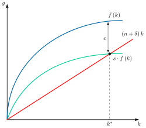
El punto de corte entre inversión efectiva y la de mantenimiento se alcanza para un nivel de capital per cápita \(k^{*}\), donde inversión y depreciación se igualan. Así, cabe destacar que:
Para niveles de capital por debajo de dicho punto, la productividad marginal es elevada –debido a las condiciones Inada– siendo la inversión efectiva superior a la de mantenimiento, por lo que el stock irá aumentando de forma decreciente hasta alcanzar \(k^{*}\).
Para niveles de capital por encima de dicho punto, la inversión dada productividad marginal decreciente, no será suficiente para compensar la depreciación neta y el capital per cápita se reducirá hasta alcanzar de nuevo \(k^{*}\).
Por consiguiente, \(k^{*}\) es el stock de capital per cápita de estado estacionario6. De esta manera, el capital per cápita crece a una tasa nula en estado estacionario, igual que la producción y el consumo per cápita. Las variables en niveles –capital, producción y consumo– crecerán en estado estacionario a la misma tasa, igual al crecimiento de la población, \(n\).
La “Regla de oro” de acumulación del capital
Una vez caracterizado el estado estacionario, Phelps (1961) analiza la bondad del óptimo alcanzado en él. Al no contar con una función objetivo para evaluar, Phelps propone que se maximice el bienestar cuando se maximice el consumo.
Si por medio de política económica es posible llegar a una tasa de ahorro para la cual se maximice el consumo per cápita de estado estacionario, que Phelps toma como criterio de bienestar, se estará cumpliendo la denominada “Regla de oro” de la acumulación de capital.
Analíticamente, para encontrar el stock de capital de regla de oro, \(k_{oro}\), se observa que al hablar de estado estacionario entonces \(\dot{k}=0\). De esta manera y teniendo en cuenta que el ahorro es la diferencia entre producción y consumo, se puede reescribir la ecuación fundamental 13.11 para expresar el consumo en estado estacionario, \(c^{*}\), como función del capital en estado estacionario, \(k^{*}\) \[c^{*}=f\left(k^{*}\right)-\left(n+\delta\right)k^{*}\] se maximizará el consumo respecto al capital \[\dfrac{\partial c^{*}}{\partial k^{*}}=f^{'}\left(k^{*}\right)-\left(n+\delta\right)=0 \tag{13.15}\] por lo tanto la regla de oro de acumulación se dará cuando la productividad marginal del capital, \(f^{'}\left(k^{*}_{oro}\right)\), se iguala a la suma de la tasa de crecimiento de la población, \(n\), y la depreciación, \(\delta\) \[f^{'}\left(k^{*}_{oro}\right)=n+\delta \tag{13.16}\] es decir, el punto en el que la pendiente de la función producción coincide con la pendiente de la inversión de mantenimiento.
Analíticamente, aplicando también una función Cobb-Douglas se puede obtener la tasa de ahorro de oro \[s_{oro}=\alpha \tag{13.17}\] y por tanto el capital per cápita en estado estacionario \[k_{oro}=\left(\dfrac{\alpha\cdot A}{n+\delta}\right)^{\frac{1}{1-\alpha}} \tag{13.18}\]
Gráficamente, en un plano de producción per cápita, \(y\), y capital per cápita, \(k\), como el de la Figura 13.2, se representan la función de producción, \(f\left(k\right)\), la inversión de mantenimiento, \(\left(n+\delta\right)k\), y las curvas de ahorro para dos tasas de ahorro, \(s_{oro}\) y \(s>s_{oro}\). Así:
Con \(s_{oro}\), el estado estacionario coincide con \(k_{oro}\), y el consumo per cápita, \(c_{oro}\), es el máximo, pues es la mayor distancia entre \(f\left(k\right)\) y \(\left(n+\delta\right)k\).
Con \(s>s_{oro}\), el estado estacionario, \(k^{*}\), queda a la derecha de \(k_{oro}\), con un consumo, \(c\), menor. La economía se encuentra entonces en una senda dinámicamente ineficiente, porque una reducción de la tasa de ahorro aumentaría el consumo hoy y en todos los periodos futuros.
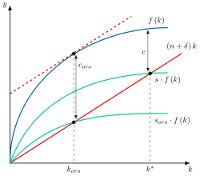
Conclusión
En definitiva, cuando una sociedad llega al capital de la regla de oro alcanza el máximo consumo per cápita de estado estacionario, aunque ese criterio no sale de las preferencias de los individuos, algo que sí hace el modelo de Ramsey.
Política económica: transición y cambio estructural
Para analizar la evolución de las tasas de crecimiento del capital per cápita, \(\gamma_{K}\) , –y por tanto del resto de las magnitudes de la economía–, basta con dividir la ecuación fundamental entre el stock de capital per cápita: \[\gamma_{K}=\dfrac{\dot{k}_{t}}{k_{t}}=\underbrace{\dfrac{s\cdot f\left(k_{t}\right)}{k_{t}}}_{{\text{Curva de}\atop \text{ahorro}}}-\underbrace{\left(n+\delta\right)}_{{\text{Curva de}\atop \text{depreciaci{ó}n}}} \tag{13.19}\] siendo el primer componente la curva de ahorro, \(CA\), y el segundo la curva de depreciación, \(CD\).
Gráficamente, en un plano de crecimiento del capital per cápita, \(\gamma_{K}\) , y capital per cápita, \(k\), como el de la Figura 13.3, se representan las dos curvas. Así, se puede observar como la tasa de crecimiento del capital per cápita es decreciente a medida que el stock de capital se aproxima a su valor de estado estacionario. En estado estacionario, el crecimiento del capital per cápita es cero ya que la inversión es igual a la pérdida de capital per cápita debida a la depreciación y al crecimiento de la población.
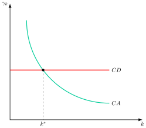
A continuación, se analizará como la política económica podría alterar el equilibrio a largo plazo al modificar parámetros como la tasa de ahorro, el crecimiento de la población y la tasa de depreciación.
Efecto de un incremento de la tasa de ahorro
Si la tasa de ahorro, \(s\), experimenta un aumento repentino y permanente, la curva de ahorro se desplaza inmediatamente hacia arriba. Gráficamente, en un plano de crecimiento del capital per cápita, \(\gamma_{K}\), y capital per cápita, \(k\), como el de la Figura 13.4, se representan la curva de depreciación, \(CD\), y la curva de ahorro antes, \(CA\), y después, \(CA^{\prime}\), de ese aumento. Así:
Con \(CA\), el estado estacionario es \(k^{*}\), donde la curva de ahorro corta a la de depreciación.
Como el capital inicial es todavía \(k^{*}\), \(CA^{\prime}\) queda por encima de \(CD\) y la tasa de crecimiento pasa a ser positiva.
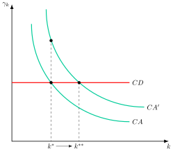
Esto implica que el stock de capital comienza a desplazarse hacia la derecha. A medida que esto sucede, la distancia entre las curvas de ahorro y depreciación se reduce debido a la existencia de rendimientos decrecientes del capital. Eventualmente, la economía converge hacia un nuevo punto de estado estacionario con crecimiento nulo, \(k^{**}\).
Por lo tanto, un incremento permanente de la tasa de ahorro solo tiene como efecto un incremento temporal de la tasa de crecimiento del capital per cápita y el PIB per cápita y un aumento de capital per cápita y de la renta per cápita en estado estacionario, pero no genera un incremento permanente de la tasa de crecimiento.
Además, el mecanismo de aumento de la tasa de ahorro no es infinito, dado que \(s\) se sitúa entre 0 y 1, y también puede que dicha política no sea buena aunque aumente el PIB per cápita ya que reduce el consumo y si el stock de capital inicial fuera superior a \(k^{*}_{oro}\), entonces un aumento de la tasa de inversión sería claramente perjudicial.
Reducción de la tasa de crecimiento de la población
Por otro lado, partiendo del estado estacionario, \(k^{*}\), una reducción de la tasa de crecimiento de la población, \(n\), desplaza hacia abajo la curva de depreciación efectiva, \(\left(n+\delta\right)\). Gráficamente, en un plano de \(\gamma_{K}\) y \(k\) como el de la Figura 13.5, se representan la curva de ahorro, \(CA\), y la curva de depreciación antes, \(CD\), y después, \(CD^{\prime}\), de esa reducción. Así:
Con \(CD\), el estado estacionario es \(k^{*}\), donde la curva de ahorro corta a la de depreciación.
\(CD^{\prime}\) queda por debajo de \(CA\) en \(k^{*}\), de modo que el capital per cápita crece y se registra un crecimiento positivo.
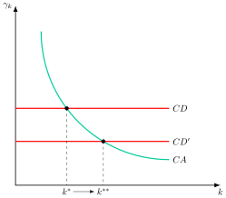
No obstante, de la misma forma que con el incremento en la tasa de ahorro, la tasa de crecimiento del capital per cápita disminuye gradualmente hasta que se alcanza un nuevo estado estacionario, \(k^{**}\), con un mayor capital per cápita y renta per cápita, pero en el que el crecimiento será, de nuevo, nulo.
Además, tampoco se puede generar crecimiento a largo plazo a base de reducir \(n\) repetida y permanentemente, dado que esto conllevaría tasas de crecimiento de la población cada vez más negativas, por lo que la población acabaría extinguiéndose.
Reducción de la tasa de depreciación
Los efectos de una reducción de la tasa de depreciación son idénticos, tanto conceptual como gráficamente, a los de una reducción de la tasa de crecimiento de la población.
Progreso tecnológico
La lección principal hasta ahora es que la acumulación de capital no puede explicar el crecimiento a largo plazo en un modelo neoclásico. La respuesta que dio Solow fue la de relajar el supuesto simplificador de tecnología constante. La tecnología tendría el mismo efecto que un aumento de la tasa de ahorro –sería un movimiento de la curva \(CA\)–, con la diferencia de que la tecnológica puede mejorar sin límite.
Analíticamente, para estudiar el cambio tecnológico en el modelo de Solow se asume que el cambio tecnológico es neutral en el sentido de Harrod –que es el único tipo que garantiza la existencia de un estado estacionario7–, de forma que se modifica la función de producción \[Y_{t}=F\left(K_{t},A_{t}L_{t}\right) \tag{13.20}\] es decir, la tecnología hace más eficiente al trabajo –con la misma cantidad de trabajadores, \(L_{t}\), un aumento de la eficiencia de trabajo hace que la producción aumente–, por lo que \(A\cdot L\) se denomina unidades de trabajo efectivo, donde la tecnología \(A_{t}\) crece a una tasa exógena \(g\) \[\dfrac{\dot{A}_{t}}{A_{t}}=g \tag{13.21}\]
Así, en presencia de cambio tecnológico, es posible definir las variables agregadas en términos de unidades de trabajo efectivo \[\hat{k}=\dfrac{K}{A\cdot L}\quad\hat{y}=\dfrac{Y}{A\cdot L}\] por lo que la ecuación fundamental del modelo de Solow será \[\dot{\hat{k}}_{t}=s\cdot f\left(\hat{k}_{t}\right)-\left(n+\delta+g\right)\cdot\hat{k}_{t} \tag{13.22}\]
De esta forma, se observa que la tasa de crecimiento del capital por unidad de trabajo efectivo –y, por tanto, de la producción por unidad de trabajo efectivo– es decreciente a medida que la economía se acerca al estado estacionario, siendo cero en el mismo \[\gamma^{*}_{\hat{k}}=\gamma^{*}_{\hat{y}}=0 \tag{13.23}\]
No obstante, si en estado estacionario las variables por unidad de trabajo efectivo no crecen, esto implica que las variables per cápita crecerán a una tasa igual a la de la tecnología: \[\gamma^{*}_{k}=\gamma^{*}_{y}=g \tag{13.24}\] por lo que el modelo de Solow implica que el crecimiento a largo plazo depende del cambio tecnológico exógeno.
Adicionalmente, es posible obtener la acumulación de capital por unidad de trabajo efectivo aplicando la regla de oro vista anteriormente: \[\hat{k}_{oro}=\left(\dfrac{\alpha}{n+\delta+g}\right)^{\frac{1}{1-\alpha}} \tag{13.25}\]
Convergencia y limitaciones del modelo
Llegados a este punto, es preciso distinguir entre 2 tipos de convergencia en la literatura del crecimiento económico:
Convergencia absoluta: si los países difieren solo en su capital inicial, los pobres crecen más que los ricos, porque están más lejos de su estado estacionario. El modelo solo la predice cuando comparten los mismos parámetros. La evidencia la rechaza en muestras amplias de países, pues no todos tienen el mismo estado estacionario, pero la encuentra en grupos homogéneos, como la OCDE, los estados de EE. UU. o las regiones europeas (Barro y Sala-i-Martı́n 2004, 15).
Convergencia condicional: una vez controlados los determinantes del estado estacionario, la tasa de crecimiento es tanto mayor cuanto más lejos está la economía de su propio estado estacionario. Es la que predice el modelo y la que acepta la evidencia, con una velocidad de en torno al 2 % anual (Barro y Sala-i-Martı́n 2004, 15).
En el modelo, la velocidad de convergencia, \(\beta\), viene dada por \(\left(1-\alpha\right)\left(n+\delta+g\right)\). Con los valores habituales (una participación del capital en torno a 0,3, \(g\) del 2 %, \(n\) del 1 % y \(\delta\) del 5 %), sale en torno al 5-6 % anual, muy por encima del 2 % observado (Barro y Sala-i-Martı́n 2004, 58-59). De ahí el modelo ampliado con capital humano de Mankiw, Romer y Weil (1992).
Convergencia del modelo
En definitiva, Solow predice la convergencia de las economías hacia su estado estacionario:
Cada economía converge hacia su propio estado estacionario, determinado por sus tasas de ahorro, crecimiento poblacional y progreso tecnológico.
Esto no implica que todos los países alcancen el mismo nivel de renta per cápita, sino que cada uno tiende hacia un equilibrio específico según sus características estructurales.Si las diferencias entre países derivan de diferencias en el stock de capital, la existencia de diferentes rendimientos marginales incentivará los flujos hacia países más pobres.
En teoría, esto debería acelerar su crecimiento, aunque en la práctica los flujos observados son mucho menores. Es la “paradoja de Lucas” (Lucas 1990), que se atribuye a barreras institucionales, a riesgos o a diferencias de capital humano.Si las diferencias radican en diferentes conocimientos, se irán reduciendo al ir accediendo al mismo todos los países.
Esto se debe al supuesto de que el conocimiento es exógeno y accesible para todos los países. Bajo esta premisa, las diferencias tecnológicas deberían reducirse con el tiempo. Sin embargo, en la realidad, el acceso al conocimiento depende de factores como educación, infraestructura y capacidad de absorción, lo que limita esta convergencia.Convergencia condicional: el modelo no predice que los países pobres crezcan necesariamente más que los ricos, es decir, no predice convergencia absoluta, sino convergencia condicional.
Además, el modelo reproduce cinco de los seis hechos estilizados de Kaldor8.
Con progreso técnico, reproduce el crecimiento sostenido del producto por trabajador, el aumento del capital por trabajador, una tasa de rentabilidad del capital constante, una relación capital-producto estable y unas participaciones de las rentas estables (Kaldor 1961, 178-79). No reproduce el sexto, las diferencias de crecimiento entre países.
Limitaciones
No obstante, el modelo tiene limitaciones:
La evidencia muestra que la renta per cápita sí crece de forma sostenida a largo plazo, mientras que el modelo sin progreso técnico predice crecimiento nulo en el estado estacionario.
La función de producción no tiene en cuenta otros factores que intervienen en la producción –por ejemplo, el capital humano.
La tasa de ahorro y de cambio tecnológico se asumen exógenas.
Solow (1957) midió, para la economía privada no agrícola de EE. UU. entre 1909 y 1949, que solo una octava parte (12,5 %) del aumento del producto por hora trabajada se debía a la acumulación de capital por hora, y siete octavas partes (87,5 %) al cambio técnico en sentido amplio, el llamado residuo de Solow, que es la parte del crecimiento del producto no explicada por la acumulación de factores y que se atribuye al cambio técnico. El modelo no explica de qué depende ese residuo, pues la tasa de progreso técnico, \(g\), se toma como exógena.
Por tanto, la mayor parte del crecimiento queda sin explicar dentro del modelo. Además, el progreso técnico no puede hacerse endógeno sin cambiar los supuestos, pues, por el Teorema de Euler, la producción se agota en los pagos al capital y al trabajo y no quedan recursos para remunerar a quien lo genera: es un “maná caído del cielo”.
Solución
La solución a este problema pasa por abandonar alguno de los supuestos neoclásicos:
Abandonar la función de producción neoclásica.
Abandonar la competencia perfecta.
Antes de dar ese paso, el modelo de Ramsey-Cass-Koopmans mantiene los supuestos neoclásicos y endogeniza solo el ahorro.
13.3 Modelo de Ramsey-Cass-Koopmans 3'
A continuación, el modelo de Ramsey-Cass-Koopmans9 o simplemente el modelo de Ramsey, va a asumir los supuestos fundamentales del modelo de Solow aunque se va a suponer que el ahorro y, por lo tanto, el consumo, son endógenos.10
Se apoya en un enfoque intertemporal para la maximización de la utilidad de un consumidor representativo.
Para ello, el planificador social11 trata de maximizar el bienestar social, dado por una función de utilidad intertemporal que depende del consumo actualizado al momento presente con una tasa de descuento social que depende de la tasa de descuento, \(\rho\), y del crecimiento de la población, \(n\), para tener en cuenta el bienestar de las generaciones futuras:
\[\max u=\int^{\infty}_{0}e^{-\left(\rho-n\right)t}u\left(c_{t}\right)dt \tag{13.26}\] sujeto a la siguiente restricción de recursos de la economía \[f\left(k_{t}\right)=c_{t}+\dot{k}_{t}+\left(n+\delta\right)k_{t} \tag{13.27}\] y a la condición de transversalidad12 \[\lim_{t\rightarrow\infty}\lambda_{t}\cdot k_{t}=0 \tag{13.28}\]
Suponiendo una función de utilidad de elasticidad de sustitución intertemporal constante como la siguiente, donde \(\sigma\) es la inversa de esa elasticidad13 \[u\left(c_{t}\right)={\dfrac{c^{1-\sigma}_{t}}{1-\sigma}} \tag{13.29}\] De las CPO se deriva la ecuación de Euler o regla de Keynes-Ramsey, según la cual la tasa de crecimiento del consumo depende de la productividad marginal del capital, \(f^{\prime}\left(k_{t}\right)\), de la tasa de depreciación, \(\delta\), y de la tasa de descuento, \(\rho\): \[\gamma_{c}=\dfrac{\dot{c}_{t}}{c_{t}}=\dfrac{1}{\sigma}\cdot\left(f^{\prime}\left(k_{t}\right)-\delta-\rho\right) \tag{13.30}\] La tasa de descuento debe superar a la tasa de crecimiento de la población, \(n\), para que la utilidad total sea finita. Como en el estado estacionario el consumo per cápita es constante, es decir, su tasa de crecimiento es nula, la productividad marginal del capital es la suma de la tasa de descuento, \(\rho\), y de la tasa de depreciación, \(\delta\) \[f^{\prime}\left(k^{*}\right)=\rho+\delta \tag{13.31}\]
Esta expresión es la regla de oro modificada para tener en cuenta las decisiones endógenas de consumo.14
De esta forma, se observa que el stock de capital de estado estacionario del modelo de Ramsey es inferior al de la regla de oro:
La productividad marginal del capital es superior en Ramsey, ya que \(\rho>n\):
\[f^{\prime}\left(k^{*}_{oro}\right)=n+\delta<\rho+\delta=f^{\prime}\left(k^{*}\right)\]
Por lo que el capital de la regla de oro es mayor que el capital de estado estacionario de Ramsey \[\left(\dfrac{\alpha\cdot A}{n+\delta}\right)^{\frac{1}{1-\alpha}}>\left(\dfrac{\alpha\cdot A}{\rho+\delta}\right)^{\frac{1}{1-\alpha}} \tag{13.32}\]
Es importante destacar que:
La regla de oro del modelo de Solow implicaría en el de Ramsey un exceso de capital respecto al óptimo intertemporal. Aunque permitiría un mayor consumo en el estado estacionario, exigiría sacrificar demasiado consumo durante la transición, por lo que sería subóptima (Romer 2012, 65). La razón es que el individuo valora más el consumo presente que el consumo futuro.
Analíticamente, esto se debe a la introducción de la tasa de descuento, \(\rho\), que no estaba presente en el modelo de Solow.
El modelo de Ramsey, al incluir la impaciencia de los individuos, \(\rho\), predice un nivel de capital en estado estacionario que es inferior al de la regla de oro del modelo de Solow. Por lo tanto, el modelo de Ramsey evita la posibilidad de sobreacumulación al reflejar un comportamiento optimizador más realista.
Es decir, el modelo de Ramsey es dinámicamente eficiente: mientras que en el modelo de Solow puede existir sobreacumulación de capital, no es así en el de Ramsey.
Implicaciones
En suma, el modelo de Ramsey es más rico que el de Solow, ya que:
Permite que la tasa de ahorro sea endógena. Con función de producción Cobb-Douglas, la tasa de ahorro durante la transición es monótona. Según los parámetros, puede ser creciente, decreciente o constante, y en el estado estacionario es inferior a \(\alpha\), la tasa de ahorro de la regla de oro (Barro y Sala-i-Martı́n 2004, 106-7).
Tiene en cuenta las preferencias de los consumidores respecto a la suavización del consumo entre periodos, \(\sigma\), y respecto al tiempo, \(\rho\).
De hecho, cuando \(\rho\) tiende a \(n\) el modelo de Ramsey converge a la regla de oro de Solow. Es el caso en que el planificador concede el mismo peso a todas las generaciones, sin preferencia intertemporal.Permite el análisis de bienestar al basarse en optimización dinámica.
Con competencia perfecta y en ausencia de externalidades, las decisiones descentralizadas de los individuos llegarán a una solución óptima de Pareto (es decir, la del planificador benevolente), algo que no ocurría necesariamente en el modelo de Solow (es decir, en el que la regla de oro no se alcanzaba automáticamente).
Por tanto, el modelo de Ramsey permite caracterizar la eficiencia dinámica y derivar el stock de capital y de consumo de estado estacionario de forma optimizadora.
Sin embargo, el cambio de enfoque no altera la conclusión principal del modelo de Solow: sin progreso técnico, el crecimiento de estado estacionario de las variables per cápita es nulo. Con progreso técnico, las variables por unidad de trabajo efectivo permanecen constantes y las variables per cápita crecen a la tasa exógena de la tecnología, \(g\).
Esta limitación es el punto de partida de los modelos de crecimiento endógeno, en los que los factores de crecimiento a largo plazo quedan determinados por el propio modelo.
13.4 Crecimiento endógeno 6'30"
Los modelos de Solow y de Ramsey comparten una paradoja: el progreso técnico juega un papel crucial y, sin embargo, es exógeno, de modo que no explican el crecimiento.
Las teorías de crecimiento endógeno superan esta limitación tratando de construir modelos, a diferencia de los neoclásicos, en los que la tasa de crecimiento sea positiva sin necesidad de suponer que alguna variable crezca de una manera exógena.15
Primera generación: función de producción no neoclásica
En una primera generación de modelos de crecimiento endógeno, las tasas de crecimiento positivas se generan asumiendo una función de producción no neoclásica mediante 2 vías:
Rendimientos marginales del capital no decrecientes o que no tienden a cero: modelo AK y sus variantes (capital humano, Sobelow y gasto público productivo)
Externalidades del capital.
Modelo AK
Se trata de un modelo de Rebelo (1991) que es capaz de generar un crecimiento sostenido de la renta per cápita con rendimientos constantes a escala gracias a que el capital no presenta rendimientos marginales decrecientes. El crecimiento (endógeno) se explica por las variables del modelo.
Introduciendo tecnología tipo AK, se va a proponer una función como \[Y_{t}=A\cdot K_{t} \tag{13.33}\] donde \(\alpha\), el exponente del capital en la función de Solow, es 1, por lo que las tecnologías AK presentan rendimientos constantes a escala y rendimientos marginales constantes del capital, de modo que si se doblara el stock de capital se doblaría el nivel de producción, pero no presentan las otras dos propiedades básicas de la función de producción neoclásica:
No hay rendimientos marginales decrecientes
No se cumplen las condiciones de Inada.
Además, la tecnología es constante –\(g=0\)–.
Por consiguiente:
La tasa de crecimiento del capital per cápita es constante y positiva si \(s\cdot A>n+\delta\), con independencia del nivel de \(k\): \[\dfrac{\dot{k}}{k}=s\cdot A-\left(n+\delta\right) \tag{13.34}\]
La economía ya no se dirige a un estado estacionario, sino que siempre crece a una tasa constante.
La tasa de crecimiento viene determinada por factores observables y, en algunas ocasiones, al alcance de la política económica16.
Cambios en los parámetros –por ejemplo, shocks o política económica– alteran de forma permanente la tasa de crecimiento. Y una perturbación transitoria, como la destrucción de capital por una guerra, tiene efectos permanentes sobre el nivel de renta, porque no hay convergencia hacia la senda anterior.
No predice convergencia condicional (pues no existe relación entre la tasa de crecimiento y el nivel de capital per cápita de la economía)1718.
Nunca habrá ineficiencia dinámica, esto es, una situación en la que haya “demasiado” ahorro.
Si consideramos un grupo de economías con los mismos parámetros, la única predicción es que todas crecen a la misma tasa, pero difieren en su posición inicial.
Gráficamente, en un plano de crecimiento del capital per cápita, \(\gamma_{K}\), y capital per cápita, \(k\), como el de la Figura 13.6, se representan la curva de ahorro, \(CA\), y la de depreciación, \(CD\). Así:
Ambas son rectas horizontales: \(CA=s\cdot A\) y \(CD=n+\delta\).
Su distancia, que es la tasa de crecimiento, \(\gamma_{K}\), es la misma para cualquier nivel de capital, como \(k_{0}\), y es positiva si \(s\cdot A>n+\delta\), de modo que no hay estado estacionario.
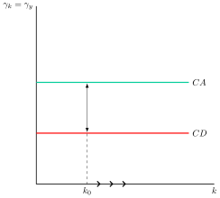
Críticas
El modelo AK, al interpretar el capital de forma amplia para incluir capital físico y humano, asume que ambos son perfectamente sustitutivos. Sin embargo, su acumulación difiere en la práctica. Para corregir esto, el modelo de Lucas y Uzawa introduce tecnologías separadas para cada tipo de capital.
Además, a diferencia de la evidencia empírica, el modelo AK no predice la convergencia condicional. En respuesta a esta limitación, surgió el modelo de Sobelow para compatibilizar el crecimiento sostenido de la renta per cápita con la convergencia observada entre países.
Modelo de capital humano
El modelo de Lucas y Uzawa trata de compatibilizar el crecimiento sostenido de la renta per cápita con tecnologías diferentes para el capital físico y el humano (Uzawa 1965; Lucas 1988).
Proponen una economía con dos sectores. El sector de bienes finales produce con la función
\[Y=A\cdot K^{\alpha}_{Y}\cdot H^{1-\alpha}_{Y} \tag{13.35}\] donde \(K_{Y}\) y \(H_{Y}\) son los factores empleados en ese sector. El capital físico, \(K\), se dedica íntegramente a producir bienes, y el capital humano, \(H\), se reparte entre producir bienes, \(H_{Y}=uH\), y educar, \(\left(1-u\right)H\), siendo \(u\) la fracción dedicada a producir. El capital humano se acumula en el sector educativo según
\[\dot{H}=B\left(1-u\right)H-\delta H \tag{13.36}\] siendo \(B\) la productividad de ese sector y \(\delta\) la tasa de depreciación (Barro y Sala-i-Martı́n 2004 ecs. 5.20-5.21). Así, el capital físico y el humano se acumulan de forma distinta.
Conclusiones del modelo de capital humano
De este modelo se concluye que:
Todas las variables per cápita crecerán a una tasa positiva y constante si la capacidad que tiene la economía para generar capital humano es lo suficientemente elevada. En concreto, esa tasa es \(\gamma=\dfrac{1}{\sigma}\left(B-\delta-\rho\right)\), positiva si \(B>\delta+\rho\) (Barro y Sala-i-Martı́n 2004 ec. 5.31). Por lo tanto, se trata de un resultado similar al del modelo AK, pero sin necesidad de asumir que el capital físico y el capital humano se acumulan de la misma manera
El crecimiento de equilibrio de este modelo no depende del nivel de renta inicial, pero hay dinámica de transición hacia la senda de crecimiento equilibrado (Barro y Sala-i-Martı́n 2004, 250-51).
La implicación de política económica más importante es que las políticas que mejoren la capacidad de la economía para acumular capital humano –es decir el sistema educativo– darán lugar a aumentos permanentes en la tasa de crecimiento de la renta per cápita19.
Modelo de Sobelow
Este modelo20 trata de superar la limitación del modelo AK de que no hay convergencia condicional proponiendo una productividad marginal que no es asintóticamente nula.
De esta manera, demuestra que la condición que permite generar crecimiento endógeno no son los rendimientos marginales no decrecientes del capital, sino el incumplimiento de la condición de Inada por la derecha. O, dicho de otra manera: los rendimientos marginales no decrecientes del capital son una condición suficiente pero no necesaria para generar crecimiento endógeno.
Supuestos clave: función de producción que cumple 2 de las 3 propiedades de una función de producción neoclásica2122: \[Y=A\cdot K+B\cdot K^{\alpha}\cdot L^{1-\alpha} \tag{13.37}\] , es decir, se trata, como la función del modelo de Solow, de una función de producción cuyos factores de producción son capital y trabajo, pero que, a diferencia de la de Solow, solo cumple 2 de las 3 condiciones de una función de producción neoclásica:
Cumple la propiedad de los rendimientos marginales decrecientes del capital y del trabajo.
Cumple la propiedad de los rendimientos constantes a escala.
No cumple la condición de Inada por la derecha, es decir, el producto marginal del capital cuando éste tiende a infinito no es cero, sino \(A\).
Para analizar su dinámica, la función se expresa en términos per cápita, \(y=f\left(k\right)=A\cdot k+B\cdot k^{\alpha}\), de modo que el producto medio del capital es \[\dfrac{f\left(k\right)}{k}=A+B\cdot k^{-\left(1-\alpha\right)} \tag{13.38}\] decreciente en \(k\), pero con límite \(A\) cuando \(k\) tiende a infinito. Sustituyéndolo en la tasa de crecimiento del capital per cápita se obtiene \[\gamma_{K}=s\cdot\left(A+B\cdot k^{-\left(1-\alpha\right)}\right)-\left(n+\delta\right) \tag{13.39}\] de modo que la curva de ahorro, \(CA\), ya no tiende a cero, como en el modelo de Solow, sino a \(s\cdot A\) (Barro y Sala-i-Martı́n 2004 ec. 1.63).
Gráficamente, en un plano de crecimiento del capital per cápita, \(\gamma_{K}\), y capital per cápita, \(k\), como el de la Figura 13.7, se representan la curva de ahorro, \(CA\), su asíntota, \(s\cdot A\), y la curva de depreciación, \(CD\), con dos valores posibles, \(\left(n+\delta\right)_{1}\) y \(\left(n+\delta\right)_{2}\). Así:
\(CA\) es decreciente en \(k\) y se aproxima a la asíntota \(s\cdot A\).
Si \(n+\delta>s\cdot A\), como en \(CD_{1}\), las curvas se cortan en el capital de estado estacionario, \(k^{*}\), y el crecimiento a largo plazo es nulo, igual que en Solow.
Si \(n+\delta<s\cdot A\), como en \(CD_{2}\), las curvas no se cortan. La tasa de crecimiento es siempre positiva, decrece con \(k\) y tiende a \(s\cdot A-\left(n+\delta\right)\), de modo que hay crecimiento endógeno con dinámica de transición.
Como la distancia entre \(CA\) y \(CD_{2}\) disminuye con \(k\), a igualdad de parámetros las economías con menos capital crecen más, y el modelo predice convergencia condicional.
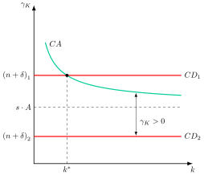
Gasto público y crecimiento
Por otro lado, Barro (1990) en su modelo de crecimiento endógeno introduce el gasto público productivo, es decir, servicios públicos que entran como un factor más en la función de producción privada \[Y_{t}=A\cdot K^{\alpha}_{t}\cdot G^{1-\alpha}_{t} \tag{13.40}\] Sin embargo, ese gasto se financia con impuestos que reducen la renta disponible y el ahorro, de modo que, a partir de cierto tamaño, un aumento adicional del gasto reduce el crecimiento. \[G_{t}=\tau\cdot Y_{t} \tag{13.41}\]
Bajo estas premisas va a relacionar el crecimiento económico y el tipo impositivo, que representará el tamaño del sector público.
Sustituyendo el gasto público, \(G=\tau\cdot Y\), siendo \(\tau\) el tipo impositivo, en la función de producción y despejando \(Y\), resulta \[Y_{t}=A^{\frac{1}{\alpha}}\cdot\tau^{\frac{1-\alpha}{\alpha}}\cdot K_{t} \tag{13.42}\] que es un modelo AK en el que la productividad del capital, \(A^{\frac{1}{\alpha}}\cdot\tau^{\frac{1-\alpha}{\alpha}}\), depende del tipo impositivo. Si el ahorro es una fracción \(s\) de la renta disponible, \(\left(1-\tau\right)\cdot Y\), la tasa de crecimiento del capital per cápita es \[\gamma_{K}=s\cdot\left(1-\tau\right)\cdot A^{\frac{1}{\alpha}}\cdot\tau^{\frac{1-\alpha}{\alpha}}-\left(n+\delta\right) \tag{13.43}\] y alcanza su máximo en \(\tau^{*}=1-\alpha\) (Sala-i-Martı́n 2022, 61-65).23
Gráficamente, en un plano de crecimiento y tipo impositivo como el de la Figura 13.8, se representa la curva que relaciona estas dos variables. Si el tipo impositivo es 0, no hay bien público y la producción es nula. Si el tipo impositivo es 1 la inversión privada sería 0 porque el Estado hace suya toda la producción. Sin embargo, para valores intermedios la relación entre crecimiento y tipo impositivo o tamaño del sector público tendrá forma de U invertida.
En este contexto, el Estado puede maximizar el crecimiento adoptando un tamaño equivalente al que se daría en un equilibrio competitivo donde los factores productivos fuesen privados. Intuitivamente el Estado escogería el nivel de gasto para el que la cantidad obtenida se iguale a la cantidad aplicada, \(1-\alpha\), es decir, el peso del sector público en la función de producción.
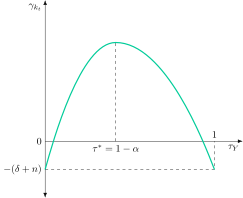
Modelo de externalidades del capital: learning by doing
Finalmente, autores como Romer24 y Lucas afirman que la acumulación de capital físico puede mejorar el “know-how” de las empresas y de la industria a través de un efecto desbordamiento –spillover– pudiendo provocar externalidades positivas que puede desembocar en rendimientos crecientes a escala.
Concretamente, Lucas plantea una función de producción que dependerá de capital, trabajo y externalidades las cuales, si son lo suficientemente grandes, puede permitir que el capital, en sentido amplio, deje de presentar rendimientos marginales decrecientes y provocar que las tasas de crecimiento de las variables per cápita sean positivas y constantes: \[Y_{t}=A\cdot K^{\alpha}_{t}\cdot L^{1-\alpha}_{t}\cdot E^{\eta} \tag{13.44}\] donde \(E\) representa la externalidad, y el parámetro \(\eta\) representa la importancia de la externalidad , es decir, la elasticidad-producto de la externalidad.25
Conclusiones
La existencia de externalidades, si éstas son lo suficientemente grandes, permite que el capital (en sentido amplio) presente rendimientos marginales constantes y, por tanto, que las variables per cápita crezcan a una tasa positiva y constante. Aunque la evidencia empírica no respalda dicha cuestión y muestra que las externalidades no suelen ser tan fuertes (Sala-i-Martı́n 2022, 60 y 156).
Implicaciones de política económica
Las implicaciones de política económica son que el sector público puede aumentar la tasa de crecimiento a largo plazo de dos formas:
Afectando a \(K\): el hecho de que existan externalidades implica que la empresa no puede capturar todos los efectos de su inversión en capital, por lo que habrá subinversión. Por lo tanto, para que se alcance el stock de capital óptimo, el Gobierno puede estimular la inversión vía desgravaciones, subsidios, etc.
Afectando a \(\eta\): se trataría de medidas que potenciasen los efectos externos, esto es, que fomentasen el intercambio y desarrollo de ideas: creación de clusters tecnológicos, de centros superiores de investigación, mejora de las relaciones universidad-empresa, etc.
En resumen, el resultado no es óptimo de Pareto, porque los precios no reflejan las externalidades positivas. La solución es pigouviana, es decir, una subvención o una desgravación a la inversión.
Segunda generación: competencia imperfecta y progreso tecnológico endógeno
Los modelos de primera generación explican la existencia de crecimiento endógeno, pero no incorporan determinados factores que se consideran esenciales para el crecimiento económico, como la importancia del conocimiento y el cambio tecnológico y de cómo se produce.
Esta limitación dio lugar al desarrollo de modelos de crecimiento endógeno basados en la competencia imperfecta donde la innovación genera el cambio tecnológico y, por tanto, crecimiento endógeno, distinguiéndose dos enfoques principales:
Los modelos en los que la I+D genera una expansión de la variedad de productos, lo que impulsa el crecimiento (Romer 1990).
Los modelos en los que la I+D mejora la calidad de los productos, dejando obsoletos los productos más antiguos, siguiendo la idea de la destrucción creativa de Schumpeter (Aghion y Howitt 1992)26.
Modelo de Romer
Se trata de un modelo en el que el progreso técnico es el resultado de una actividad intencionada y costosa que puede llevarse a cabo porque se da en un contexto de competencia imperfecta, esto es, en el que se generan excedentes apropiables gracias a un sistema de patentes, y que permiten retribuir la actividad de I+D.27
Así, el modelo de Romer se basa en la importancia del conocimiento –o ideas– para el crecimiento económico y en las características del propio conocimiento y del sector de innovación que produce nuevo conocimiento.
Supuestos
Se basa en los siguientes supuestos:
Modelo de equilibrio general
Población constante, pues si creciera a una tasa positiva la tasa de crecimiento aumentaría sin límite (Barro y Sala-i-Martı́n 2004, 297).
Precio del bien igual a 1
Tres tipos de agentes:
Los productores de bienes finales operan en un entorno de competencia perfecta, con una función de producción neoclásica: \[Y_{t}=A\cdot K^{\alpha}\cdot L^{1-\alpha},\quad K^{\alpha}=\sum\limits_{j=1}^{N}x^{\alpha}_{j} \tag{13.45}\] donde \(N\) es el número de bienes intermedios existentes y \(x_{j}\) es la cantidad utilizada de cada uno de ellos.
Las empresas/inventores de bienes de capital –es decir bienes intermedios– operan con una función de producción que presenta rendimientos crecientes a escala, por lo que será necesario asumir que operan en un marco de competencia imperfecta. Los rendimientos crecientes a escala implican, necesariamente, economías de escala, esto es, un coste marginal inferior al coste medio, por lo que si las empresas funcionan en competencia perfecta, es decir, \(P=CMg\), obtendrán pérdidas28. Así, las empresas toman 2 decisiones, invertir o no. Si invierten incurren en un coste fijo, \(\phi\), y después tendrán que decidir a qué precio venden el bien de capital resultante.
Consumidores con un problema equivalente al del modelo de Ramsey pero con crecimiento nulo de la población.
La innovación-tecnología es un bien no rival y solo parcialmente excluible. Como el coste de inventar es fijo, hace falta algo de poder de mercado, que el Estado garantiza con un sistema de patentes.
La innovación o progreso técnico toma la forma de aumento en el número de variedades de bienes de capital disponibles como factores de producción29.
Solución
La solución del modelo implica que la tasa de crecimiento de la renta per cápita es constante y puede ser positiva a largo plazo, y depende de la aversión a las fluctuaciones del consumo, \(\sigma\), del coste fijo de la I+D, \(\phi\), de la tecnología, \(A\), de la población, \(L\), y de la impaciencia, \(\rho\): \[\gamma_{y}=\gamma_{c}=f(\underbrace{\sigma}_{-},\underbrace{\phi}_{-},\underbrace{A}_{+},\underbrace{L}_{+},\underbrace{\rho}_{-})\] con efecto negativo de \(\sigma\), \(\phi\) y \(\rho\) y positivo de \(A\) y \(L\).
Este crecimiento sostenido lo permite la I+D, que va introduciendo nuevas variedades de bienes de capital. Como cada variedad nueva se suma a las existentes sin sustituirlas, el capital se reparte entre más tipos de bienes intermedios y su productividad marginal no disminuye de forma progresiva. Además, el modelo presenta de nuevo un efecto escala de la población30
Conclusión
La tasa de crecimiento es constante porque depende de parámetros constantes. No hay dinámica de transición ni convergencia en este modelo.
Solución del planificador
Adicionalmente, el resultado obtenido en una economía de mercado puede compararse con el que se obtendría en caso de que un planificador social sustituyera al mercado:
En los modelos de planificador central el planificador maximiza la utilidad de los consumidores sujeta a los recursos de la economía. En este modelo la restricción agregada de la economía expresa que la producción tendrá tres distintos usos: consumo, producción de variedades e investigación.
La solución que obtendríamos sería una cantidad de bienes de capital superior a la del equilibrio de mercado, pues en la solución descentralizada existe poder de mercado, por lo que la cantidad de bienes de capital producida será menor que la socialmente óptima.
Por lo tanto, hay margen para la intervención del sector público.
Así, en este modelo, es preferible la intervención pública en forma de subsidio a la adquisición de bienes de capital que en forma de subsidio a la investigación, aunque con coste de I+D en capital humano, como en el artículo original de Romer (1990, S99), hacen falta además subsidios directos a la I+D.
Ello se debe a que un subsidio a la adquisición cuyo montante sea igual al mark-up sobre el coste marginal permite a las empresas productoras de bienes finales adquirir bienes intermedios al precio competitivo, es decir, equivalente a su coste marginal31.
En conjunto, los modelos de primera generación explican el crecimiento sostenido sin explicar el progreso técnico, y los de segunda lo endogeneizan con la I+D. En ambos, las políticas que afectan al capital humano, a las externalidades o a la innovación pueden cambiar la tasa de crecimiento a largo plazo, algo que en Solow solo afectaba al nivel de renta.
13.5 Conclusiones  30"
30"
Como conclusión, aunque el modelo de Solow fue un punto de partida esencial, su limitación principal —el carácter exógeno del progreso técnico— impulsó una nueva generación de economistas a repensar el crecimiento:
Paul Romer demostró que la inversión en conocimiento e innovación puede sostener el crecimiento a largo plazo, al tratar el saber como un bien sin rendimientos decrecientes.
William Nordhaus amplió esta visión al incorporar los costes ambientales de la tecnología, mostrando que el crecimiento económico no puede desligarse de sus consecuencias climáticas, lo que dio lugar a los Modelos de Evaluación Integrada (IAMs), como DICE, PAGE y FUND.32
Daron Acemoglu, por su parte, reveló que las instituciones inclusivas son fundamentales para fomentar la innovación y garantizar un desarrollo sostenido.33
De esta forma, estos tres Nobel transformaron la teoría del crecimiento al explicar la prosperidad desde dinámicas internas —tecnología, medio ambiente e instituciones— sin depender de supuestos externos.
Apéndice
13.A.1. Modelo de Harrod Domar
El modelo de Harrod (1939) y Domar (1946) fue el modelo de referencia hasta la popularización del modelo neoclásico a mediados de los años cincuenta. Sus autores intentaron combinar dos rasgos de la economía keynesiana en un modelo que explicara el crecimiento a largo plazo: el multiplicador y el acelerador (Sala-i-Martı́n 2022, 70). Escribieron durante o justo después de la Gran Depresión, de ahí su preocupación por el desempleo y por la inestabilidad del capitalismo (Barro y Sala-i-Martı́n 2004, 17).
El multiplicador keynesiano supone que el ahorro es una proporción constante de la renta, \[S_{t}=s\cdot Y_{t} \tag{13.46}\] siendo \(s\) la tasa de ahorro, con \(0<s<1\). El acelerador supone que el aumento de capital necesario para aumentar la producción en una cuantía dada es constante, es decir, independiente de la relación capital-trabajo, \[\Delta Y_{t}=A\cdot\Delta K_{t} \tag{13.47}\] donde \(A>0\) es la productividad del capital, el inverso de la relación capital-producto (Sala-i-Martı́n 2022, 70).
Una función de producción cercana al espíritu de Harrod y Domar es la de coeficientes fijos de Leontief, en la que trabajo y capital deben combinarse en proporciones fijas para aumentar la producción, \[Y_{t}=\min\left(A\cdot K_{t},B\cdot L_{t}\right) \tag{13.48}\] siendo \(A\) y \(B\) constantes exógenas. Si \(AK=BL\), todas las máquinas y todos los trabajadores están empleados. Si \(AK>BL\), hay máquinas ociosas, y si \(AK<BL\), hay trabajadores en paro (Barro y Sala-i-Martı́n 2004, 71).34
Gráficamente, en un plano de producción per cápita, \(f\left(k\right)\), y capital per cápita, \(k\), como el de la Figura 13.9, se representa la función de producción en términos per cápita, \(y=\min\left(A\cdot k,B\right)\) (Barro y Sala-i-Martı́n 2004, 72). Así:
Para \(k<B/A\), el capital se emplea por completo y \(f\left(k\right)=A\cdot k\), una recta que parte del origen con pendiente \(A\).
Para \(k>B/A\), la producción per cápita es la constante \(B\) y el producto marginal del capital es nulo.
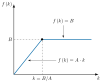
Sustituyendo en la ecuación fundamental del modelo de Solow-Swan, con ahorro \(s\cdot f\left(k\right)\) y depreciación del capital per cápita \(\left(\delta+n\right)\cdot k\), la tasa de crecimiento del capital per cápita es \[\gamma_{k}=\frac{s\cdot\min\left(A\cdot k,B\right)}{k}-\left(\delta+n\right) \tag{13.49}\] donde \(\delta\) es la tasa de depreciación y \(n\) la de crecimiento de la población (Sala-i-Martı́n 2022, 71-72).35 La curva de ahorro, \(CA\), es horizontal, al nivel \(s\cdot A\), hasta \(k=B/A\), y decrece hacia cero a partir de ahí. La curva de depreciación, \(CD\), es la horizontal \(\delta+n\).
Gráficamente, en un plano de la tasa de crecimiento del capital per cápita, \(\gamma_{k}\), y del capital per cápita, \(k\), como los de las Figura 13.10, Figura 13.11 y Figura 13.12, se representan la curva de ahorro, \(CA\), y la curva de depreciación, \(CD\). El comportamiento depende de los parámetros \(A\), \(s\), \(\delta\) y \(n\) (Sala-i-Martı́n 2022, 73-75). Así:
Si \(s\cdot A<\delta+n\), como en la Figura 13.10, \(CA\) queda siempre por debajo de \(CD\) y no hay estado estacionario con \(k>0\). El capital per cápita converge a cero, y con él el producto y el consumo. La economía termina a la izquierda de \(B/A\), con \(AK<BL\), es decir, con desempleo permanente y creciente. Harrod y Domar vieron aquí una buena descripción de la Gran Depresión (Sala-i-Martı́n 2022, 73).
Si \(s\cdot A>\delta+n\), como en la Figura 13.11, para \(k\) bajo el modelo se parece al \(AK\), con crecimiento positivo y constante \(s\cdot A-\delta-n\). Al llegar a \(B/A\) la tasa de crecimiento empieza a caer, porque el ahorro sigue siendo una fracción constante de la renta aunque el producto marginal del capital sea cero. El estado estacionario \(k^{*}>B/A\) tiene \(AK>BL\): hay capital ocioso, que crece a la tasa \(n\) junto con la población (Barro y Sala-i-Martı́n 2004, 73).
Si \(s\cdot A=\delta+n\), como en la Figura 13.12, el tramo horizontal de \(CA\) coincide con \(CD\). Si el capital inicial es menor que \(B/A\), la economía se queda en él, con trabajadores ociosos. Si es mayor, la tasa de crecimiento es negativa y el capital converge a \(B/A\), el único caso con pleno empleo de capital y trabajo (Sala-i-Martı́n 2022, 74).
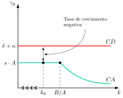
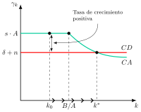
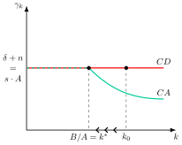
Como \(A\), \(s\), \(\delta\) y \(n\) son exógenos, no hay motivo para que \(s\cdot A=\delta+n\). Con toda probabilidad, la economía acaba en uno de los dos resultados indeseables: crecimiento perpetuo del desempleo o del capital ocioso (Barro y Sala-i-Martı́n 2004, 73). Es la propiedad de «filo de la navaja» del modelo (Sala-i-Martı́n 2022, 75).
El modelo neoclásico elimina el filo de la navaja de dos maneras. En primer lugar, hace que el producto medio del capital dependa de \(k\), de modo que \(k\) se ajusta hasta que \(s\cdot f\left(k\right)/k=\delta+n\). En segundo lugar, si el ahorro es endógeno, ningún agente que maximice su utilidad seguiría ahorrando una fracción constante de la renta con máquinas ociosas y producto marginal nulo (Barro y Sala-i-Martı́n 2004, 74). Una vía alternativa es la de la escuela de Cambridge, que defendía una tasa de ahorro endógena porque trabajadores y capitalistas tienen distinta propensión marginal a ahorrar y la distribución de la renta cambia durante el crecimiento (Sala-i-Martı́n 2022, 75).36
El modelo sostiene que el crecimiento depende del ahorro y de la productividad del capital, por lo que en los países en desarrollo la política se centró en aumentar el ahorro y la inversión, con ayuda externa cuando el ahorro interno no bastaba. Todavía hoy algunas instituciones internacionales emplean este esquema, la llamada «brecha de financiación», para calcular las necesidades de ayuda, aunque explica mal la inversión y el crecimiento (Easterly 1997).
13.A.2. El modelo de Ramsey-Cass-Koopmans completo
Siguiendo a Barro y Sala-i-Martín (2004, 86-91), un planificador social maximiza la utilidad intertemporal \[U=\int^{\infty}_{0}e^{-\left(\rho-n\right)t}\,u\left(c_{t}\right)dt \tag{13.50}\] siendo \(\rho\) la tasa de descuento, \(n\) el crecimiento de la población, \(c_{t}\) el consumo per cápita y \(u\left(c\right)\) una función de utilidad de elasticidad de sustitución intertemporal constante, \[u\left(c\right)=\frac{c^{1-\sigma}-1}{1-\sigma} \tag{13.51}\] con \(\sigma>0\). La restricción de recursos de la economía es \[\dot{k}_{t}=f\left(k_{t}\right)-c_{t}-\left(n+\delta\right)k_{t} \tag{13.52}\] siendo \(k_{t}\) el capital per cápita, \(f\left(k_{t}\right)\) la función de producción per cápita y \(\delta\) la tasa de depreciación. A ella se suman el capital inicial, \(k_{0}\), y la condición de transversalidad. Para que \(U\) sea finita, \(\rho\) debe superar a \(n\).
Siguiendo a Barro y Sala-i-Martín (2004, 89-90), el Hamiltoniano en valor actual es \[H=u\left(c_{t}\right)e^{-\left(\rho-n\right)t}+\lambda_{t}\left[f\left(k_{t}\right)-c_{t}-\left(n+\delta\right)k_{t}\right] \tag{13.53}\] siendo \(\lambda_{t}\) el precio sombra en valor actual de una unidad de renta en \(t\). Las condiciones de primer orden son \[u^{\prime}\left(c_{t}\right)e^{-\left(\rho-n\right)t}=\lambda_{t} \tag{13.54}\] \[\dot{\lambda}_{t}=-\lambda_{t}\left[f^{\prime}\left(k_{t}\right)-n-\delta\right] \tag{13.55}\] y la condición de transversalidad es \[\lim_{t\rightarrow\infty}\lambda_{t}\cdot k_{t}=0 \tag{13.56}\]
Derivando la primera condición respecto al tiempo y sustituyendo \(\dot{\lambda}/\lambda\), se obtiene la ecuación de Euler (Barro y Sala-i-Martı́n 2004, 90-91), \[\gamma_{c}=\frac{\dot{c}_{t}}{c_{t}}=\frac{1}{\sigma}\cdot\left(f^{\prime}\left(k_{t}\right)-\delta-\rho\right) \tag{13.57}\] siendo \(\sigma=-u^{\prime\prime}\left(c\right)c/u^{\prime}\left(c\right)\) el inverso de la elasticidad de sustitución intertemporal. Es la ecuación del cuerpo del tema.
En el estado estacionario, la curva \(\dot{k}=0\) es \[c=f\left(k\right)-\left(n+\delta\right)k \tag{13.58}\] que alcanza su máximo cuando \(f^{\prime}\left(k\right)=n+\delta\), el capital de la regla de oro, \(k_{oro}\). La recta \(\dot{c}=0\) es la vertical \[f^{\prime}\left(k^{*}\right)=\rho+\delta \tag{13.59}\] Como \(\rho>n\), se tiene \(k^{*}<k_{oro}\). Las dos curvas se cortan en tres puntos: el origen, \(E=\left(k^{*},c^{*}\right)\) y un punto con consumo nulo (Barro y Sala-i-Martı́n 2004, 99-103).
Gráficamente, en un plano de consumo per cápita, \(c\), y capital per cápita, \(k\), como el de la Figura 13.13, se representan la curva \(\dot{k}=0\), la recta vertical \(\dot{c}=0\) en \(k^{*}\) y la senda de silla, \(SS\) (Barro y Sala-i-Martı́n 2004, 102-4). Así:
Por encima de la curva \(\dot{k}=0\), el capital cae. Por debajo, crece.
A la izquierda de \(k^{*}\), el consumo crece, y a su derecha cae.
El punto \(E\) es un punto de silla: linealizando el sistema, el determinante es negativo y los autovalores tienen signos opuestos (Barro y Sala-i-Martı́n 2004, 103).
Con \(k_{0}<k^{*}\), el planificador elige \(c_{0}\) sobre la senda de silla, que es creciente y pasa por el origen y por \(E\), y \(c\) y \(k\) aumentan hasta \(E\).
Si el consumo inicial, \(c^{\prime}_{0}\), es mayor que el de la senda, la trayectoria cruza \(\dot{k}=0\), \(k\) cae y llega a cero en tiempo finito, donde el consumo debería saltar a cero. No es un equilibrio.
Si el consumo inicial, \(c^{\prime\prime}_{0}\), es menor, la trayectoria cruza \(\dot{c}=0\) y \(k\) sube por encima de \(k_{oro}\) hasta el punto de consumo nulo, \(k^{**}\), con \(f^{\prime}\left(k\right)-\delta<n\). Viola la transversalidad: sobreahorro, que tampoco es un equilibrio (Barro y Sala-i-Martı́n 2004, 103-4).
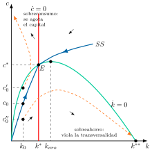
La transversalidad es una condición de optimalidad. La de no Ponzi es \[\lim_{t\rightarrow\infty}a_{t}\,e^{-\int^{t}_{0}\left(r_{v}-n\right)dv}\geq0 \tag{13.60}\] siendo \(a_{t}\) los activos per cápita y \(r_{t}\) el tipo de interés. Es una restricción de viabilidad que impide financiar el consumo con deuda nueva (Barro y Sala-i-Martı́n 2004, 89). Para ver la importancia de la primera, si el mundo acabara en un plazo \(T\) conocido, la condición sería \(k\left(T\right)=0\) y el equilibrio ya no sería la senda de silla, sino una trayectoria por encima de ella que aterriza en el eje vertical justo en \(T\) (Barro y Sala-i-Martı́n 2004, 104-5).
Log-linealizando alrededor del estado estacionario, el producto per cápita, \(y\), converge a su valor de estado estacionario, \(y^{*}\), según \[\log y\left(t\right)=e^{-\beta t}\log y\left(0\right)+\left(1-e^{-\beta t}\right)\log y^{*} \tag{13.61}\] con \(\beta>0\) la velocidad de convergencia (Barro y Sala-i-Martı́n 2004, 111). El modelo predice convergencia condicional y no absoluta. Con una tasa de ahorro constante, \[\beta=\left(1-\alpha\right)\left(g+n+\delta\right) \tag{13.62}\] como en el modelo de Solow, siendo \(\alpha\) la participación del capital en la renta y \(g\) la tasa de progreso técnico. Para reproducir el 2 % anual observado hace falta \(\alpha\approx0{,}75\), es decir, un concepto amplio de capital con rendimientos decrecientes lentos (Barro y Sala-i-Martı́n 2004, 112).
13.A.3. La trampa de la pobreza
El modelo de Solow no es capaz de explicar por qué, con el paso del tiempo, el mundo parece tender a la formación de 2 clubes: uno de países ricos y otro de países pobres. Es decir, algunos países parecen estar atrapados en trampas de pobreza.
Para incorporar este fenómeno en el modelo de Solow, se introducirá una función de producción en forma de S. Este tipo de función de producción es justificable, dado que muchos países pobres son agrícolas y la agricultura presenta notables rendimientos decrecientes.
Sin embargo, si la economía realiza fuertes inversiones en infraestructuras, estas permitirán inicialmente rendimientos crecientes. Finalmente, las infraestructuras acabarán acercándose a su plena capacidad, por lo que la agricultura volverá a experimentar rendimientos decrecientes.
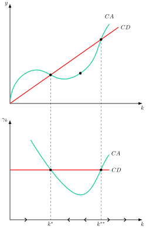
De esta forma, todos los países con un nivel de capital per cápita inferior a \(k^{**}\) caen en una trampa de pobreza que les conduce al estado estacionario estable de renta baja, \(k^{*}\).
Por su parte, los países con un nivel de capital per cápita superior a \(k^{**}\) eluden dicha trampa de pobreza y crecen hasta un estado estacionario de renta alta, con crecimiento per cápita nulo si los rendimientos vuelven a ser decrecientes. Solo si la función converge a una tecnología AK en esa zona, el crecimiento positivo es permanente (Barro y Sala-i-Martı́n 2004, 74-77).
Un shock que desplace la curva de inversión efectiva para arriba o la curva de inversión de sostenimiento para abajo, de manera que ambas ya no se corten, permitiría al país crecer hasta el estado estacionario de renta alta.
Las implicaciones de política económica son claras: se puede llevar a cabo una política que produzca dichos shocks –por ejemplo, mediante aumentos de la tasa de ahorro o de reducción de la tasa de crecimiento de la población–. Una vez que la economía haya superado el nivel de capital per cápita \(k^{**}\), la política se puede retirar, pues la economía podrá seguir creciendo hacia ese estado sin necesidad de ese “big push”.
13.A.4. Crecimiento schumpeteriano: el modelo de Aghion y Howitt
El modelo de Aghion y Howitt (1992) formaliza la «destrucción creativa» de Schumpeter: las innovaciones que impulsan el crecimiento crean nuevas tecnologías, pero también destruyen los resultados de las anteriores al dejarlos obsoletos (Aghion y Howitt 2009, 85). A diferencia del modelo de variedades de Romer, en el que un bien nuevo no deja obsoletos a los antiguos, aquí las innovaciones mejoran la calidad de un bien existente y desplazan a la versión anterior (Barro y Sala-i-Martı́n 2004, 317). Aghion y Howitt recibieron el Premio Nobel de Economía de 2025, junto a Joel Mokyr.
El bien final se produce con trabajo y un único bien intermedio, \[Y_{t}=\left(A_{t}L\right)^{1-\alpha}x^{\alpha}_{t} \tag{13.63}\] siendo \(L\) el trabajo, \(A_{t}\) la productividad del bien intermedio, \(x_{t}\) la cantidad empleada y \(0<\alpha<1\) (Aghion y Howitt 2009, 85). El bien intermedio lo produce un monopolista, y su beneficio y el PIB son proporcionales al trabajo efectivo, \(A_{t}L\) (Aghion y Howitt 2009, 86-87).
En cada periodo, un empresario puede intentar una innovación que eleva la productividad de \(A_{t-1}\) a \(A_{t}=\gamma A_{t-1}\), con \(\gamma>1\). La probabilidad de éxito, \(\mu\), depende del gasto en investigación ajustado por productividad, \(n_{t}=R_{t}/A^{*}_{t}\), con \(A^{*}_{t}=\gamma A_{t-1}\), \[\mu=\varphi\left(n\right)=\lambda n^{\sigma} \tag{13.64}\] siendo \(\lambda\) la productividad de la investigación y \(0<\sigma<1\) (Aghion y Howitt 2009, 88). Se divide entre \(A^{*}_{t}\) porque la tecnología es cada vez más compleja y más difícil de mejorar.37
Si tiene éxito, el innovador se convierte en el monopolista y obtiene el beneficio, pero la investigación le cuesta \(R_{t}\) tenga éxito o no. Maximizando el beneficio neto esperado, la ecuación de arbitraje de la investigación es \[\varphi^{\prime}\left(n\right)\cdot\pi\cdot L=1 \tag{13.65}\] siendo \(\pi\) el parámetro de beneficio del monopolista: el beneficio marginal esperado de investigar iguala a su coste marginal (Aghion y Howitt 2009, 89). De ella se deduce que \(n\), y por tanto \(\mu=\varphi\left(n\right)\), son constantes.
El crecimiento es aleatorio. Con probabilidad \(\mu\), la productividad crece una proporción \(\gamma-1\), y con probabilidad \(1-\mu\) no crece. El crecimiento medio es \[g=\mu\cdot\left(\gamma-1\right) \tag{13.66}\] (Aghion y Howitt 2009, 90). En el largo plazo, el crecimiento medio es la frecuencia de las innovaciones por su tamaño.
De la ecuación de crecimiento se obtienen cinco implicaciones (Aghion y Howitt 2009, 91-92):
Crece con la productividad de la investigación, \(\lambda\), lo que apunta a la importancia de la educación superior.
Crece con el tamaño de las innovaciones, \(\gamma\). Un país rezagado tiene la «ventaja del atraso» de Gerschenkron: cuanto más lejos de la frontera, mayor mejora obtiene al implementarla y más rápido crece.
Crece con la protección de la propiedad intelectual, porque encarece imitar la tecnología y eleva el beneficio del innovador.
Decrece con la competencia en el mercado de producto, predicción contraria a estudios empíricos recientes, como los de Nickell y de Blundell, Griffith y Van Reenen.
Crece con el tamaño de la población, \(L\): es el «efecto escala», que la literatura ha cuestionado. En un modelo con innovaciones horizontales y verticales a la vez desaparece.
En el equilibrio descentralizado hay dos distorsiones. La duración limitada del monopolio reduce el incentivo a investigar. En cambio, el efecto de «destrucción creativa» o «robo de negocio», la transferencia de beneficios del innovador anterior al nuevo, lo aumenta. Como esa transferencia no tiene valor social, en el modelo de Barro y Sala-i-Martín el segundo efecto es mayor que el primero, de modo que la rentabilidad privada de investigar supera a la social y el crecimiento puede ser demasiado alto (Barro y Sala-i-Martı́n 2004, 317-19).
13.A.5. Hechos estilizados de Kaldor
El estudio moderno del crecimiento económico comenzó en la posguerra, impulsado por la experiencia de las economías industrializadas occidentales. En su artículo clásico, Nicholas Kaldor (1961, 178-79) identificó seis patrones empíricos que parecían cumplirse de forma consistente en estos países. Estos patrones, conocidos como los “hechos estilizados de Kaldor”, se convirtieron en el principal desafío para la teoría del crecimiento: explicar simultáneamente todos ellos.
El producto por trabajador, \(Y/L\), ha crecido de forma sostenida, sin tendencia a disminuir, en las economías desarrolladas.
El capital por trabajador (\(K/L\)) también ha mostrado un crecimiento sostenido a lo largo del tiempo.
El ratio capital-producto (\(K/Y\)) se ha mantenido relativamente estable, lo que implica que \(K\) e \(Y\) crecen a tasas similares, superiores al crecimiento de la población (\(L\)).
La participación de las rentas del trabajo y del capital en la renta nacional ha permanecido estable en el tiempo, sin mostrar tendencias sistemáticas.
La tasa de rentabilidad del capital (\(r\)) también se ha mantenido estable, sin tendencia creciente o decreciente.
La tasa de crecimiento de la productividad presenta variaciones significativas entre países, lo que sugiere que factores estructurales y tecnológicos juegan un papel clave en el desarrollo económico.
Críticas
No son universales: Kaldor los formuló para las sociedades capitalistas desarrolladas (1961, 178), y su sexto hecho ya recoge diferencias apreciables de crecimiento entre países. Jones y Romer (2010) los actualizan con nuevos hechos que incluyen las instituciones, la población y el capital humano.
Cambios estructurales: la relación entre riqueza y renta ha aumentado en las economías ricas, de entre el 200 % y el 300 % en 1970 a entre el 400 % y el 600 % en 2010 (Piketty y Zucman 2014), lo que cuestiona la estabilidad de la relación capital-producto.
Simplificación excesiva: describen las causas próximas del crecimiento, la acumulación de capital y la tecnología, pero no explican por qué difieren entre países, lo que remite a causas fundamentales como las instituciones (Acemoglu 2009, sec. 1.7).
Evidencia empírica reciente: desde principios de los años 80, la participación del trabajo en la renta ha caído de forma significativa en la mayoría de los países y sectores (Campante et al. 2021, 10), lo que contradice la estabilidad que proponía Kaldor.
Tipos de interés: los tipos de interés reales muestran una tendencia decreciente que se remonta al siglo XIV, por lo que la constancia de la tasa de rentabilidad no se sostiene en una perspectiva histórica larga (Campante et al. 2021, 10, a partir de Schmelzing (2019)).
Críticas teóricas: la tradición poskeynesiana cuestiona que el crecimiento esté determinado por la oferta, como suponen los modelos de este tema, y lo vincula a la demanda (Kaldor 1966).
Incluso Kaldor evolucionó: en su conferencia inaugural de 1966 en Cambridge defendió que la industria es el motor del crecimiento por sus rendimientos crecientes a escala, y que el crecimiento lo impulsa la demanda (Kaldor 1966).
13.A.6. Descomposición del crecimiento económico
El estudio del crecimiento económico se centra en comprender por qué algunas economías se enriquecen y prosperan, mientras que otras se estancan. En este análisis, una de las herramientas más poderosas y sencillas es la descomposición del PIB per cápita. Esta identidad, aparentemente simple, revela las dos fuentes fundamentales de la prosperidad: el crecimiento extensivo y el crecimiento intensivo. La ecuación que lo explica es la siguiente: \[\dfrac{PIB}{Poblaci\acute{o}n}=\dfrac{Empleo}{Poblaci\acute{o}n}\cdot\dfrac{PIB}{Empleo}\]
Cada uno de los términos de esta ecuación representa un pilar del desarrollo. El término de la izquierda, el PIB por persona, es la medida clave de la prosperidad. Los dos términos de la derecha explican cómo se logra esa prosperidad. Analizar cómo cambia cada uno nos dice la historia de una economía.
El crecimiento extensivo: más gente trabajando
El crecimiento extensivo se basa en emplear más trabajo. En el contexto de la ecuación, esto se refleja en un incremento del término \(\frac{Empleo}{Poblaci\acute{o}n}\), es decir, un mayor porcentaje de la población contribuye a la producción.
Este tipo de crecimiento es el más común en las primeras etapas del desarrollo económico. Por ejemplo, en economías en transición, un aumento en la participación de la mujer en la fuerza laboral o una migración masiva de trabajadores pueden disparar el crecimiento del PIB. Es un camino rápido para aumentar la producción total al usar más manos para trabajar.
Sin embargo, el crecimiento extensivo tiene un límite natural. Una vez que la mayoría de la población en edad de trabajar ya está empleada, es imposible que el término \(\frac{Empleo}{Poblaci\acute{o}n}\) siga aumentando significativamente. En ese punto, el crecimiento económico se estanca a menos que la economía encuentre otra fuente de prosperidad. Un país no puede depender para siempre de simplemente añadir más trabajadores.
El crecimiento intensivo: eficiencia y productividad
A medida que una economía madura y se vuelve más desarrollada, su fuente principal de crecimiento se desplaza hacia la eficiencia y la productividad. Esto se conoce como crecimiento intensivo y se refleja en el término \(\frac{PIB}{Empleo}\), que mide la productividad laboral: la cantidad de producción generada por cada trabajador.
El crecimiento intensivo es el motor de la prosperidad a largo plazo y no tiene un límite tan claro como el extensivo, porque depende del capital y de la tecnología. La productividad de un trabajador puede aumentar gracias a:
Acumulación de capital físico: Invertir en maquinaria, tecnología, y fábricas permite a los trabajadores producir más con menos esfuerzo, aunque con rendimientos decrecientes, como muestra el modelo de Solow.
Acumulación de capital humano: La educación, la formación y la experiencia hacen que la mano de obra sea más cualificada y eficiente.
Innovación y progreso tecnológico: Este es el factor más crucial. La invención de nuevas tecnologías, la mejora de procesos productivos y las nuevas ideas (la PTF en el modelo de Solow) permiten a los trabajadores generar más valor sin la necesidad de más capital o trabajo.
Esta descomposición puede detallarse con la contabilidad del crecimiento de Solow. Con una función de producción que depende de la tecnología, el capital y el trabajo, la tasa de crecimiento del producto, \(\gamma_{Y}\), es la suma de la contribución del progreso técnico, \(R\), y de las tasas de crecimiento del capital, \(\gamma_{K}\), y del trabajo, \(\gamma_{L}\), ponderadas por sus participaciones en la renta, \(s_{K}\) y \(s_{L}\), \[\gamma_{Y}=R+s_{K}\cdot\gamma_{K}+s_{L}\cdot\gamma_{L} \tag{13.67}\] La contribución del progreso técnico, \(R\), no se observa directamente y se calcula como un residuo (Barro y Sala-i-Martı́n 2004, 433-35). Es el residuo de Solow. Con progreso técnico neutral en el sentido de Harrod, \(R\) es la participación del trabajo, \(s_{L}\), por la tasa de crecimiento de la tecnología, \(g\), es decir, \(R=s_{L}\cdot g\). En el estudio de Solow sobre la economía de EE. UU. entre 1909 y 1949, el 87,5 % del aumento del producto por hora trabajada se atribuía al cambio técnico (Solow 1957, 320).
Las economías desarrolladas dependen sobre todo del crecimiento intensivo, ya que sus mercados laborales están saturados. Por ello, la política económica en estos países se centra en fomentar la innovación, la educación y la inversión en capital, ya que solo así se puede garantizar un crecimiento sostenido del PIB per cápita. En resumen, el crecimiento intensivo es la fuente decisiva de prosperidad a largo plazo.
13.A.7. Evidencia empírica
Una de las implicaciones del modelo de Solow es que cada país converge hacia su estado estacionario. Sin embargo, algunos modelos de crecimiento endógeno, como el AK, no predicen esa convergencia.
Así, para abordar el estudio empírico hay que tener en cuenta 2 conceptos:
Convergencia \(\beta\), que afirma que las economías con menor renta per cápita inicial crecen más deprisa, es decir, existe una relación inversa entre la tasa de crecimiento de la renta per cápita y su nivel inicial. Es absoluta si se cumple sin controlar por nada, y condicional si se cumple una vez controlados los determinantes del estado estacionario.
Convergencia \(\sigma\), que afirma que se está reduciendo la dispersión de la renta per cápita de los diferentes países.
Los primeros contrastes con datos de sección cruzada se apoyaron en bases de datos como la Penn World Table de Summers y Heston (1991). Baumol halló convergencia en una muestra de 16 países ricos, pero De Long mostró que era un sesgo de selección de la muestra: al ampliarla, se rechaza la convergencia absoluta (Campante et al. 2021, 93-94). Así, en una muestra de 114 países entre 1960 y 2000, el crecimiento medio guarda una relación ligeramente positiva con la renta inicial (Barro y Sala-i-Martı́n 2004, 45). Esto se interpretó como una primera victoria para los modelos de crecimiento endógeno, dado que estos no predecían convergencia.
Sin embargo, a comienzos de los años 90, Barro (1991), Barro y Sala-i-Martín (1992) y Mankiw, Romer y Weil (1992) encuentran evidencia de convergencia condicional: al controlar por los determinantes del estado estacionario (ahorro, crecimiento de la población, capital humano), el crecimiento depende negativamente de la renta inicial. Es decir, economías con los mismos parámetros convergen al mismo estado estacionario (Romer 2012, 180).
En definitiva, la evidencia empírica apoya la convergencia condicional en sentido \(\beta\), con velocidades de convergencia en torno al 2 % anual (Barro y Sala-i-Martı́n 2004, cap. 11). La convergencia \(\sigma\) es un concepto distinto, pues la dispersión puede aumentar aunque haya convergencia \(\beta\) (Barro y Sala-i-Martı́n 2004, 52).
De toda esta evidencia se extraen varias lecciones:
Parece que hay suficiente evidencia a favor de la convergencia condicional, y su velocidad de convergencia estaría cercana al 2%.
La tasa de ahorro e inversión es el factor determinante más importante de la tasa de crecimiento.
La inversión en educación también aparece como un elemento importante para determinar la tasa de crecimiento de una economía.
Las distorsiones sociales y las políticas públicas inadecuadas tienen efectos perjudiciales sobre la tasa de crecimiento.
13.A.8. Ideas clave de los neoclásicos y limitaciones
A continuación se presentan las ideas clave de los modelos neoclásicos y sus limitaciones:
Ideas clave
Los modelos neoclásicos (Solow y Ramsey) analizan el crecimiento en el marco de una economía más estable que la descrita por el modelo de Harrod-Domar. Por ende, la economía capitalista no será tan inestable y no es tan vital la intervención del estado.
En los modelos neoclásicos, la acumulación de capital solo explica el crecimiento durante la transición, el crecimiento a largo plazo depende del progreso técnico exógeno y existirá una convergencia condicional.
Las recomendaciones de política económica se limitarán a influir sobre la tasa de ahorro o de crecimiento de la población, por lo que en los modelos neoclásicos la política económica tendrá menos margen de intervención que en los de crecimiento endógeno (que apoyarían políticas en áreas donde el mercado no suministraría la asignación óptima de recursos, como en la educación, la investigación, etc.).
Queda por responder por qué, ante altas tasas de acumulación de factores, unas economías han logrado crecer y otras no. En este sentido, existen multitud de estudios que abordan las llamadas causas fundamentales del crecimiento y que han puesto de relieve la importancia de factores como los sistemas de incentivos, la regulación y las instituciones, el comercio y la apertura económica, o la geografía.
Limitaciones del modelo neoclásico
Se ha criticado al modelo neoclásico metodológicamente, debido al uso de una función de producción agregada de buen comportamiento (segunda mitad del siglo XX). Es la famosa controversia del capital que enfrentó a los autores de Cambridge (Robinson) con los del MIT (Solow y Samuelson). Los autores del Cambridge británico decían que no es posible agregar bienes de capital heterogéneos. Esta crítica ha ido perdiendo peso con el tiempo, ya que se ha extendido el uso de funciones de producción agregadas.
Evidencia empírica: la más importante crítica al modelo NC la aportó el propio Solow cuando estudió empíricamente las fuentes del crecimiento económico de los EE. UU.38 El modelo NC centra su atención en la acumulación de capital, pero también considera un factor A que englobaría la tecnología y todo lo que haga más productivo el trabajo.
Lo que le falla al modelo de Solow es no fundamentar ese progreso técnico (PT), que se estima como residuo a partir de los datos. Según Solow, el ritmo de cambio técnico fue de en torno al 1 % anual en la primera mitad del período y del 2 % anual en la segunda (Solow 1957, 320). El progreso técnico es, así, como “maná caído del cielo”. Este es el origen de los modelos de crecimiento endógeno, que tratan de estudiar cómo se origina el PT.
13.A.9. Crecimiento económico y comercio internacional
La relación entre el comercio internacional y el crecimiento económico es una de las áreas más estudiadas en la Macroeconomía. En los modelos neoclásicos, como el de Solow, el comercio puede verse como un mecanismo que acelera la transición hacia el estado estacionario. Al abrirse al comercio, una economía puede acceder a tecnologías y bienes de capital más avanzados, lo que aumenta la productividad y el stock de capital, impulsando temporalmente la tasa de crecimiento. Sin embargo, en el estado estacionario, el crecimiento per cápita vuelve a ser impulsado solo por el progreso tecnológico exógeno.
Los modelos de crecimiento endógeno sugieren que la apertura puede afectar al crecimiento a largo plazo. En el modelo de Romer, la integración en el mercado mundial eleva la tasa de crecimiento, y lo relevante no es acceder a una población grande, sino a una economía con mucho capital humano (Romer 1990, S98). Grossman y Helpman (1991) y Rivera-Batiz y Romer (1991) desarrollaron modelos de comercio e innovación en esta línea.
La evidencia empírica es menos concluyente. La apertura figura entre las variables robustas de las regresiones de crecimiento (Campante et al. 2021, 91-92), pero hay problemas de causalidad, y Barro y Sala-i-Martín (2004, 530) solo encuentran un efecto positivo no significativo, es decir, evidencia débil de que la apertura estimule el crecimiento.
13.A.10. Crecimiento económico y calidad institucional
El estudio del crecimiento económico ha evolucionado más allá de la simple acumulación de capital y tecnología. El Premio Nobel de Economía de 2024, otorgado a Daron Acemoglu, Simon Johnson y James A. Robinson, reconoció sus estudios sobre cómo se forman las instituciones y cómo afectan a la prosperidad. Su investigación sostiene que la calidad de las instituciones de un país determina si prospera o se estanca.
Instituciones inclusivas frente a extractivas
La tesis central de su trabajo, desarrollada en su influyente libro Por qué fracasan los países (Acemoglu y Robinson 2012), distingue entre dos tipos de instituciones que moldean el crecimiento económico:
Las instituciones inclusivas promueven la participación de la población en la economía. Garantizan derechos de propiedad seguros, fomentan la competencia, defienden el Estado de derecho y proporcionan acceso igualitario a la educación y a las oportunidades. Al crear un entorno de incentivos adecuado, las instituciones inclusivas fomentan la inversión, la innovación y la asunción de riesgos, lo que conduce a un crecimiento económico sostenido.
Las instituciones extractivas, por otro lado, concentran el poder y la riqueza en una élite minoritaria. No protegen los derechos de propiedad de la mayoría, restringen la competencia y no aplican la ley de forma equitativa. Aunque pueden generar un crecimiento a corto plazo (por ejemplo, a través de la explotación de recursos naturales), este crecimiento no es sostenible ni inclusivo, ya que carece de la base de innovación y participación amplia necesaria para prosperar a largo plazo.
El contraste entre Corea del Norte (con instituciones extractivas) y Corea del Sur (con instituciones inclusivas) sirve como un poderoso ejemplo contemporáneo de la importancia de esta distinción.
Evidencia histórica y relevancia práctica
Para validar su teoría, Acemoglu y sus coautores recurrieron a la historia. Su investigación sobre el fenómeno del “cambio de fortuna” (reversal of fortune) demuestra cómo las colonias que eran ricas antes del contacto europeo (como las de los incas y aztecas) se empobrecieron al ser sometidas a instituciones extractivas por parte de los colonizadores (Acemoglu et al. 2002). En cambio, las regiones más pobres (como las de América del Norte) prosperaron con la adopción de instituciones inclusivas. El cambio de fortuna es difícil de explicar solo con la geografía, que es en esencia constante en el tiempo (Campante et al. 2021, cap. 7). Para Acemoglu, Johnson y Robinson, el cambio de fortuna se produjo sobre todo en el siglo XIX y se asocia con la industrialización (Acemoglu 2009, sec. 4.4).
La principal implicación de este trabajo para la política económica es que el mero suministro de ayuda financiera o la construcción de infraestructura no son suficientes para garantizar el desarrollo. La clave para la prosperidad reside en un cambio institucional profundo, que fomente la protección de los derechos de propiedad y la participación política de la población. La investigación de Acemoglu, Johnson y Robinson ha colocado a la calidad institucional en el centro del debate sobre el crecimiento económico, proporcionando una explicación fundamental para las vastas diferencias de renta entre los países del mundo.
13.A.11. Crecimiento económico y medio ambiente: los modelos de evaluación integrada y el trabajo de William Nordhaus
El debate sobre los límites del crecimiento se formalizó en 1972 con el informe del Club de Roma (Meadows et al. 1972), que utilizó un modelo simple para predecir un colapso global por el agotamiento de recursos. Nordhaus revisó esas conclusiones (Romer 2012, 41, a partir de Nordhaus, 1992). Décadas después, en 2006, la Stern Review argumentó que los costes de no actuar frente al cambio climático superaban ampliamente los de la mitigación (Stern 2006). Estos informes, aunque criticados, subrayaron la necesidad de modelos que integraran la ciencia del clima con la economía, los Modelos de Evaluación Integrada (IAMs), que comenzaron a surgir a principios de los años noventa.
El economista William Nordhaus, Premio Nobel de Economía en 2018 junto a Paul Romer, es considerado uno de los pioneros de la economía del cambio climático. Hasta la crisis del petróleo de 1973, el análisis económico tradicional no había prestado suficiente atención a la energía como factor de producción ni a las externalidades negativas que genera. Nordhaus integró la energía y las externalidades en modelos macroeconómicos para analizar la disyuntiva entre un mayor crecimiento y una mayor degradación ambiental (Jimeno 2018).
Un IAM es una herramienta que combina la ciencia del clima y los modelos económicos para analizar la relación entre el crecimiento económico, las emisiones de gases de efecto invernadero y el cambio climático. Los más influyentes son DICE, PAGE y FUND, cada uno con un enfoque distinto.
El DICE (Dynamic Integrated Climate-Economy), desarrollado por Nordhaus y publicado por primera vez en 1992 (Nordhaus 1992), integra dos bloques:
Un bloque físico-ambiental, que proyecta las consecuencias climáticas de las emisiones de CO\(_{2}\) con los conocimientos de la física.
Un bloque económico, que analiza el impacto del crecimiento sobre el medio ambiente y los costes económicos de los cambios climáticos.
Funciona como un planificador central que maximiza el bienestar económico global a lo largo del tiempo, equilibrando los costes de reducir las emisiones hoy con los beneficios de evitar daños futuros. Al ser un modelo de optimización, calcula la tasa óptima del impuesto al carbono. Su uso ha resaltado dos desafíos: la elección de la tasa de descuento temporal con que se valora el bienestar de las generaciones futuras, y la incertidumbre, tanto de los procesos físicos como de las relaciones económicas.
Nordhaus estima que el efecto del calentamiento sobre el bienestar en 2100 sería ligeramente negativo, equivalente a una pérdida del 2-3 % del PIB, unos 0,03 puntos porcentuales de crecimiento anual, y que medidas drásticas, como recortar las emisiones a menos de la mitad de las de 1990, serían mucho más costosas que no hacer nada (Romer 2012, 44, a partir de Nordhaus, 2008). La Stern Review llegó a la conclusión contraria. Nordhaus (2007) atribuyó la diferencia sobre todo a la tasa de descuento de la Stern, cercana a cero, y mostró que con tasas coherentes con los tipos de interés de mercado desaparece su llamamiento a una acción inmediata extrema.
Tras analizar los resultados de sus modelos, que muestran un panorama preocupante para la sostenibilidad del planeta, Nordhaus concluyó que, en la mayoría de los escenarios, el instrumento más eficiente para reducir las emisiones es un impuesto global y uniforme sobre el carbono (Jimeno 2018). Este impuesto incentivaría a empresas y países a reducir las emisiones y a optar por fuentes de energía más limpias, internalizando así el coste ambiental del crecimiento.
El modelo PAGE (Policy Analysis of the Greenhouse Effect), creado por Chris Hope y colaboradores y publicado en 1993 (Hope et al. 1993), se distingue por su enfoque en la incertidumbre. A diferencia del DICE, no busca una única respuesta óptima, sino que utiliza simulaciones de Monte Carlo para generar miles de escenarios y la probabilidad de cada uno. Proporciona así un perfil de riesgo para decidir en un contexto de gran incertidumbre científica y económica.
El modelo FUND (Climate Framework for Uncertainty, Negotiation and Distribution), desarrollado por Richard Tol y publicado en 1997 (Tol 1997), se enfoca en la desagregación regional, con nueve regiones. Permite analizar los impactos distributivos del cambio climático y de las políticas para mitigarlo, y poner de relieve cuestiones de justicia climática.
| Característica | DICE | PAGE | FUND |
|---|---|---|---|
| Enfoque principal | Optimización | Incertidumbre y Riesgo | Distribución regional |
| Metodología | Determinista | Probabilística | Desagregada |
| Propósito | Encontrar una política óptima | Evaluar un rango de resultados | Analizar impactos desiguales |
13.A.12. Inciso sobre desigualdad: ¿Tiene razón Piketty?
La desigualdad es un tema que, a primera vista, parece ajeno al modelo de crecimiento neoclásico con un agente representativo. Sin embargo, al extender el modelo y resolver un equilibrio descentralizado (donde los precios de los factores productivos, como el tipo de interés, son explícitos), podemos analizar la famosa tesis de Thomas Piketty.
En el modelo de Solow, en el BGP (Balanced Growth Path), la producción y el capital agregados crecen a la misma tasa que la población, \(n\), mientras que por trabajador son constantes (Campante et al. 2021, 29). A su vez, en el equilibrio descentralizado, la productividad marginal del capital, neta de depreciación, es igual al tipo de interés, \(r\), es decir, \(f^{\prime}\left(k\right)-\delta=r\).
La condición \(r>g\) y su conexión con el modelo
La condición de eficiencia dinámica del modelo de Solow, que se cumple si la economía no está en una situación de sobreacumulación, es que la productividad marginal del capital sea superior a la suma de la tasa de depreciación y el crecimiento de la población, \(f^{\prime}\left(k\right)>\delta+n\), es decir, que el tipo de interés supere el crecimiento de la población, \(r>n\). Es la misma desigualdad que Piketty popularizó como \(r>g\), siendo \(g\) la tasa de crecimiento de la renta global, que en la senda de crecimiento equilibrado es \(n\) (Campante et al. 2021, 29).
La famosa condición de Piketty (\(r>g\)) se interpreta como la fuerza fundamental para la divergencia (Piketty 2014). Según él, si la tasa de rendimiento del capital es superior a la tasa de crecimiento de la economía en su conjunto, la riqueza tenderá a acumularse de forma exponencial en manos de los capitalistas, lo que llevaría a una desigualdad insostenible (Piketty 2014, 25-26). Esta tendencia podría ser contrarrestada, según Piketty, por shocks externos, como guerras o catástrofes, o por políticas fiscales progresivas.
Desafíos empíricos a la tesis de Piketty
El modelo neoclásico, en su versión más simple, podría predecir un resultado similar al de Piketty si asumimos una economía con trabajadores sin capital y capitalistas que solo consumen los rendimientos de su capital. Sin embargo, existen varios argumentos que cuestionan esta conclusión:
El capital humano: El modelo de Solow asume que el capital es principalmente físico, pero en las economías modernas, una gran parte de la riqueza es capital humano (educación y habilidades). Si el capital humano es el factor dominante y está distribuido de forma más equitativa, la acumulación de capital no necesariamente se traduce en una mayor desigualdad. De hecho, podría contrarrestar la fuerza de divergencia si los trabajadores se convierten en los principales “propietarios de capital”.
Movilidad social: Autores como Acemoglu y Robinson (2015) sostienen que la movilidad social es un factor crucial (Campante et al. 2021, 30). Si existen mecanismos, incluso modestos, que permitan a los individuos pasar de la clase trabajadora a la capitalista y viceversa, esto puede actuar como un contrapeso a la concentración de la riqueza, evitando que la desigualdad se “descontrole”.
Evidencia histórica: El historiador económico Paul Schmelzing examinó los tipos de interés desde el siglo XIV y mostró que la condición \(r>g\) se ha cumplido de manera sistemática durante la mayor parte de la historia, al menos hasta hace muy poco (Campante et al. 2021, 31, a partir de Schmelzing, 2019). A pesar de esto, el mundo no ha visto una “plutocracia explosiva” y, de hecho, ha avanzado hacia regímenes más democráticos. Este hecho histórico parece contradecir la tesis de Piketty. Sin embargo, también se puede argumentar que las revoluciones y los grandes conflictos del pasado (como la Revolución Francesa) fueron precisamente el resultado de la acumulación de desigualdad.
En conclusión, aunque el modelo de crecimiento neoclásico puede ilustrar la lógica de la tesis de Piketty, la evidencia y los desarrollos teóricos posteriores sugieren que la relación \(r>g\) por sí sola no garantiza una desigualdad creciente. Factores como el capital humano, la movilidad social y las instituciones políticas juegan un papel crucial en la distribución de la riqueza y el poder en una sociedad.
13.A.13. Población, ideas e inteligencia artificial: de la teoría unificada a la baja fecundidad
Una pregunta recorre la teoría del crecimiento: quién produce las ideas y quién las utiliza. Si las ideas las generan personas, la población es un factor de crecimiento. Si las máquinas pueden generarlas o sustituir al trabajo, esa relación cambia. Este apartado sigue ese hilo desde la historia de muy largo plazo hasta la inteligencia artificial.
De Malthus a la transición demográfica
Kremer (1993a) defendió la relación entre población y tecnología para la historia de muy largo plazo. Galor y Weil (2000) la integran en un modelo unificado de tres regímenes. En el malthusiano, el progreso técnico es lento y el crecimiento de la población impide que la renta per cápita crezca de forma sostenida. En el posmalthusiano, el progreso técnico se acelera y la población absorbe solo una parte del crecimiento del producto. En la transición demográfica se invierte la relación positiva entre renta y crecimiento de la población, y la economía pasa al régimen de crecimiento moderno, con crecimiento sostenido de la renta. El mecanismo es doble: el progreso técnico depende del tamaño de la población y de su nivel educativo, y a su vez eleva el rendimiento del capital humano, lo que lleva a los padres a sustituir cantidad de hijos por calidad. Es la misma historia que el cuerpo del tema cuenta con la Revolución Industrial. Galor (2026) sintetiza esta teoría unificada del crecimiento: explica el paso de milenios de estancamiento al crecimiento sostenido, identifica las fuerzas comunes que lo impulsaron y las raíces históricas de las diferencias de riqueza entre países, y defiende que esas fuerzas lejanas siguen condicionando el desarrollo y las políticas que lo promueven.
La baja fecundidad hoy
Geruso y Spears (2026) documentan que la fecundidad media mundial ha pasado de unos cinco hijos por mujer en 1950 a algo más de dos, y que unos dos tercios de la población viven en países por debajo del nivel de reemplazo. Distinguen la fecundidad de cohorte, que determina el cambio generacional, de la anual, que dice menos del largo plazo. Donde la de cohorte ha caído, no se ha recuperado, y concluyen que una fecundidad persistentemente baja es un resultado probable. Evans (2026) sostiene que la emancipación femenina tiene dos efectos sobre el PIB. En una primera fase suma trabajo y lo desplaza a sectores más productivos, como ocurrió en Asia oriental con la industrialización. En la segunda, las mujeres con independencia elevan sus expectativas sobre la pareja y la maternidad mientras muchos hombres siguen prefiriendo relaciones jerárquicas, lo que se traduce en más solteros, menor fecundidad y una fuerza de trabajo futura menor. Su efecto de largo plazo sobre el PIB depende, según la autora, de cómo se adapten los hombres.
Qué dice la teoría del crecimiento
Los modelos del tema dan respuestas distintas, según qué hagan con la población:
En el modelo de Solow, un menor crecimiento de la población eleva el capital y la renta per cápita de estado estacionario, pero no cambia el crecimiento de largo plazo, como muestra la reducción del crecimiento de la población en el cuerpo.
En el modelo semiendógeno de Jones (1995), el crecimiento de largo plazo depende del crecimiento de la población, así que un menor crecimiento de la población lo reduce. Jones (2022) estudia con modelos de ese tipo el posible estancamiento del nivel de vida si la población se reduce, según recogen Fernández-Villaverde, Ventura y Yao (2025).
En el modelo de variedades de Romer, la población tiene efecto escala sobre el crecimiento, que la evidencia reciente contradice.
Fernández-Villaverde, Ventura y Yao (2025) muestran que, con el envejecimiento, el crecimiento del PIB per cápita es un indicador engañoso. Entre 1991 y 2019, el PIB de Japón creció un 0,83 % anual frente al 2,53 % de EE. UU., pero por adulto en edad de trabajar creció un 1,39 % frente al 1,65 %, porque la población en edad de trabajar japonesa cayó un 0,54 % anual. En un modelo neoclásico estándar con progreso técnico exógeno, una menor razón entre trabajo y población actúa como un shock tecnológico negativo en la ecuación de Euler, y el modelo ajusta mejor los datos de ocho economías avanzadas cuando se calibra con el crecimiento por adulto en edad de trabajar. Cuando esa razón se estabiliza, el crecimiento per cápita y el de la población en edad de trabajar vuelven a coincidir. Los autores advierten que la población en edad de trabajar no es exógena, pues depende de la inmigración y de la fecundidad, y que el PIB total sigue importando para la sostenibilidad de la deuda y de la seguridad social.
Weil (2026) estima el efecto para EE. UU. a través de varios canales: las transferencias de los trabajadores a niños y jubilados, el capital necesario, la sostenibilidad de la deuda pública, los recursos naturales fijos y el ritmo del progreso técnico. Concluye que el efecto probablemente es negativo pero modesto, que aparece solo tras un largo periodo de ajuste, y que volver a una fecundidad de reemplazo reduciría el nivel de vida durante varias décadas.
Las tres lecturas no se contradicen. La diferencia está en si la producción de ideas depende de la población. Si no depende, como en Solow, el efecto es sobre los niveles. Si depende, como en los modelos semiendógenos, el efecto llega también al crecimiento. Las estimaciones de Weil apuntan a un efecto modesto y lento, y las de Fernández-Villaverde, Ventura y Yao advierten de que la medida del crecimiento importa tanto como la teoría.
La inteligencia artificial como posible sustituto
La IA reabre la pregunta del hilo: si las ideas pudieran producirlas máquinas, la población dejaría de ser su único insumo. Jones (2026) plantea dos escenarios extremos para el crecimiento de EE. UU., que lleva unos 150 años creciendo en torno al 2 % anual. En el primero, la IA automatiza la propia inteligencia y acelera mucho el crecimiento. En el segundo, la IA es una tecnología de propósito general más y el crecimiento sigue en el 2 % (Jones 2026, 4-8). Para situar la realidad entre ambos usa un marco de tareas complementarias, de «eslabones débiles»: la producción depende de muchas tareas, y, como una cadena es tan fuerte como su eslabón más débil, queda limitada por las tareas aún no automatizadas (Jones 2026, 8-9). La idea viene del modelo «O-ring» de Kremer (1993b), llamado así por las juntas tóricas cuyo fallo destruyó el transbordador Challenger en 1986.
Si el producto se obtiene combinando una tarea fácil de automatizar, \(X_{f}\), y otra difícil, \(X_{d}\), con elasticidad de sustitución \(\varepsilon=1/2\), es proporcional a la media armónica (Jones 2026, 9-11),39 \[\frac{1}{Y}\propto\frac{1}{X_{f}}+\frac{1}{X_{d}} \tag{13.68}\] La tarea difícil limita la producción: aunque \(X_{f}\) fuera infinito, \(Y\) seguiría siendo finito. Automatizar con productividad infinita una tarea que representa una proporción \(s\) del gasto eleva el producto en un factor \[\left(\frac{1}{1-s}\right)^{\frac{\varepsilon}{1-\varepsilon}} \tag{13.69}\] Con \(\varepsilon=1/2\), automatizar por completo el software, en torno al 2 % del PIB, solo elevaría el PIB un 2 %. Con \(\varepsilon=0{,}2\), como en Jones y Tonetti (2026), automatizar la mitad del PIB lo eleva un 19 %, y para duplicar la renta per cápita hay que automatizar el 94 %.
En el modelo dinámico de Jones y Tonetti (2026), la producción de bienes y de ideas se automatiza progresivamente, y la retroalimentación entre automatización e ideas acelera el crecimiento. La aceleración es lenta al principio y solo se hace visible cuando casi todos los eslabones débiles se han automatizado: el escenario «como siempre» puede describir la próxima década o dos, pero, si la IA acaba automatizando casi todas las tareas, el crecimiento podría superar el 5 % anual (Jones 2026, 12-13). Otras estimaciones difieren: Acemoglu (2025) calcula un aumento de la productividad total de los factores de menos de 0,1 puntos porcentuales al año, y Aghion y Bunel (2024) de 0,7 (Jones 2026, 13).
Dónde se cruzan demografía e IA
Los dos fenómenos se tocan en el trabajo. Un menor número de adultos en edad de trabajar reduce la producción por habitante, y Acemoglu y Restrepo (2021) vinculan el envejecimiento con la automatización, según recogen Fernández-Villaverde, Ventura y Yao (2025). Si la producción de ideas se automatiza, como en Jones y Tonetti (2026), la oferta de trabajo humano deja de ser el único insumo de las ideas.
Nadie sabe qué ocurrirá, y el propio Jones (2026) subraya que su perspectiva es especulativa. Lo que la teoría sí permite es ordenar las preguntas: qué parte del crecimiento depende de la población, qué parte de las ideas, y cuántas tareas puede automatizar la IA antes de chocar con sus eslabones débiles.
Términos del glosario de este tema
46 términos · ver el glosario completo
Bibliografía
La intuición es que, antes de la Revolución Industrial, las mejoras de productividad se traducían en más población y no en más renta por persona, de modo que esta se mantenía cerca de la subsistencia (Campante et al. 2021, cap. 10). En las economías avanzadas, un crecimiento sostenido del 2 % anual implica que la renta per cápita se duplica aproximadamente cada 35 años, es decir, crece de forma exponencial. Es una novedad histórica: la renta per cápita mundial crecía un 0,2 % anual antes de 1870, un 1,10 % entre 1870 y 1950 y un 2,26 % entre 1950 y 2008 (Jones y Vollrath 2013, cap. 1).↩︎
Reparto sugerido de los 9 minutos: supuestos (1’30"), dinámica y equilibrio (2’), regla de oro (1’), política económica (1’30"), progreso tecnológico (1’30") y convergencia y limitaciones (1’30").↩︎
Las condiciones llevan el nombre del economista japonés Ken-Ichi Inada, que las formuló en un artículo sobre un modelo de crecimiento de dos sectores (Inada 1963).↩︎
El supuesto de rendimientos constantes a escala, combinado con el de competencia perfecta, permite formular el Teorema de Euler, según el cual la producción se agota en los pagos a los factores, por lo que no queda renta para remunerar el progreso técnico (“maná que cae del cielo”)
Si los rendimientos fuesen crecientes la producción sería insuficiente para remunerar a los factores, mientras que si los rendimientos fuesen decrecientes el pago a los factores no agota la producción.↩︎
En la literatura también se suele usar el término balanced growth path, BGP, que es la situación donde las variables crecen a una tasa constante. Con crecimiento nulo, el BGP se reduce al estado estacionario en sentido estricto, de ahí que a menudo se use “estado estacionario” como sinónimo, tomando prestada la terminología de la física clásica (Barro y Sala-i-Martı́n 2004, 35, nota 11).↩︎
Gráficamente, la inversión efectiva y la de mantenimiento también se igualan en el origen, pero es un equilibrio inestable: por las condiciones de Inada, con cualquier capital positivo, por pequeño que sea, la inversión efectiva supera a la de mantenimiento y el capital crece hasta \(k^{*}\).↩︎
Con rendimientos constantes a escala, el crecimiento equilibrado solo es posible si el progreso técnico aumenta la eficiencia del trabajo, es decir, si es neutral en el sentido de Harrod, según el teorema de Uzawa (Acemoglu 2009 teorema 2.6 de la sección 2.7.3). Con una función Cobb-Douglas, las neutralidades de Hicks, Harrod y Solow coinciden.↩︎
La lista completa y su discusión figuran en el apartado 13.A.5 del Apéndice.↩︎
Este modelo se debe a Ramsey (1928) y, posteriormente, fue perfeccionado por Cass (1965) y Koopmans (1965).↩︎
Reparto sugerido de los 3 minutos: planteamiento y ecuación de Euler (1’30"), comparación con la regla de oro (45") e implicaciones (45").↩︎
El modelo se puede plantear desde 2 puntos de vista: desde el punto de vista del planificador y de manera descentralizada. Según el Primer Teorema del Bienestar, en ausencia de externalidades, la solución del planificador coincide con la que resultaría en una economía descentralizada sin Gobierno en la que interactúan familias y empresas:
La coincidencia entre la solución del planificador social y la del equilibrio descentralizado es crucial en Economía. La solución del planificador representa el resultado ideal y eficiente para la economía en su conjunto, maximizando el bienestar social. El equilibrio descentralizado, por su parte, es el resultado de las interacciones de millones de agentes individuales que buscan su propio beneficio.
Cuando ambas soluciones coinciden, se valida la idea de que los mercados de libre competencia son eficientes. Esto demuestra que los precios, actuando como señales, pueden guiar a los agentes a tomar decisiones que, colectivamente, logran un resultado óptimo sin la necesidad de una mano reguladora.
Esta coincidencia es fundamental para la política económica. Cuando no se logra (debido a fallos de mercado), se justifica la intervención gubernamental para corregir las deficiencias y empujar a la economía hacia el camino de la eficiencia.
La condición de transversalidad, \(\lim_{t\rightarrow\infty}\lambda_{t}\cdot k_{t}=0\), siendo \(\lambda_{t}\) el precio sombra del capital en valor actual, es una condición de optimalidad: el valor del capital que queda al final del horizonte debe ser nulo, porque, si no, se habría podido consumir más. Descarta las sendas con un consumo inicial demasiado bajo, en las que se sobreacumula capital. Las de un consumo inicial demasiado alto se descartan por otro motivo: el capital se agota en un tiempo finito y el consumo tendría que caer de golpe a cero, lo que incumple la ecuación de Euler. Es distinta de la condición de no juego de Ponzi, que es una restricción de viabilidad: el hogar no puede endeudarse indefinidamente para pagar deudas con deuda nueva. Juntas implican que el valor actual de los activos tiende a cero (Barro y Sala-i-Martı́n 2004, 89-90). Véanse los temas B.03 y B.04. El planteamiento completo, con el Hamiltoniano, el diagrama de fases y la velocidad de convergencia, figura en el apartado 13.A.2 del Apéndice.↩︎
Cuanto mayor es el parámetro \(\sigma\), más cóncava es la función de utilidad, en un plano de consumo y utilidad, y más prefiere el hogar un consumo estable en el tiempo, de modo que su senda de consumo responde menos al tipo de interés. Así, si \(\sigma=0\), la función será lineal, y si \(\sigma=1\), de tipo logarítmico: \(\ln c_{t}\).
Con incertidumbre, el mismo parámetro mediría también la aversión relativa al riesgo, pero en este modelo, que es determinista, solo importa su inversa, \(1/\sigma\), la elasticidad de sustitución intertemporal del consumo.↩︎
Siendo \(g\) la tasa de crecimiento del consumo por persona, la exigencia general para que la utilidad total sea finita es \(\rho>n+(1-\sigma)g\), que sin progreso técnico (\(g=0\)) se reduce a \(\rho>n\). Véanse Barro y Sala-i-Martín (2004 ecuación 2.31) y Romer (2012, sec. 2.5).↩︎
Reparto sugerido de los 6’30": primera generación, 4 minutos (modelo AK, 1’, capital humano de Lucas–Uzawa, 1’, Sobelow, 45", gasto público de Barro, 30" y externalidades del capital, 45"), y segunda generación, 2’30" (Romer, 2’, y Aghion–Howitt, 30").↩︎
Por ejemplo, políticas que aumenten la tasa de ahorro o el nivel de la tecnología, \(s\cdot A\), o políticas que reduzcan la tasa de crecimiento de la población o la tasa de depreciación del capital, \(\delta+n\).↩︎
Este hecho no es consistente con la evidencia empírica.↩︎
Al igual que el modelo de Solow, no predice tampoco convergencia absoluta.↩︎
Nótese que esta implicación de política económica se debe a que el input para producir capital humano es únicamente capital humano. Si asumiéramos que en la producción de capital humano también se necesita capital físico, entonces mejoras en la tecnología A también aumentarían de forma permanente la tasa de crecimiento de la renta per cápita.↩︎
El nombre “Sobelow” procede de Sala-i-Martín (2022, 66) y combina Solow y Rebelo, pues la función de producción es una mezcla de los modelos de Solow y de Rebelo AK. Fue reintroducido en la literatura por Jones y Manuelli (1990).↩︎
En esta estructura, \(B\) sería un parámetro que mide la eficiencia relativa de la parte Cobb-Douglas de la producción. Es decir:
Si A mide la productividad del capital en la parte lineal (AK), donde se presentan rendimientos constantes.
Entonces B mide la productividad conjunta de capital y trabajo en la parte tradicional, donde se presentan rendimientos decrecientes.
Este tipo de modelo busca capturar mejor la realidad de economías que tienen sectores con diferentes tecnologías o dinámicas de acumulación.↩︎
Recordatorio: en economía del crecimiento, cuando decimos que una función de producción cumple las tres condiciones neoclásicas, solemos referirnos a que tiene un “buen comportamiento” desde el punto de vista analítico y dinámico. Estas tres condiciones son:
Rendimientos marginales decrecientes: cada unidad adicional de capital o trabajo aporta menos que la anterior.
Rendimientos constantes a escala: si duplicamos todos los factores, la producción también se duplica.
Condición de Inada: el producto marginal del capital tiende a infinito cuando el capital tiende a cero, y tiende a cero cuando el capital tiende a infinito.
Cuando se cumplen las tres:
El modelo tiene un estado estacionario único y estable.
La economía converge hacia ese estado sin explosiones ni colapsos.
Se garantiza que el capital no se acumula indefinidamente ni se extingue.
Por eso, se considera que la función tiene “buen comportamiento”.↩︎
La intuición es que el gasto público es productivo, pero se financia con impuestos que reducen la renta disponible y, con ella, el ahorro. Con impuestos muy bajos falta gasto público y con impuestos muy altos se desincentiva la inversión privada. El crecimiento es máximo cuando el tipo impositivo iguala la contribución del gasto público a la producción, \(1-\alpha\). Con consumidores que optimizan, como en Barro (1990), el resultado es el mismo.↩︎
La única diferencia con Romer es que \(E\) sería el capital agregado de la economía. Con esta forma, el crecimiento depende del tamaño de la población, es decir, hay un efecto escala. Kremer (1993a) lo defiende para la historia de muy largo plazo, pero para el crecimiento reciente la evidencia lo contradice (Jones 1995). Esta función se atribuye a Lucas (1988) por simplicidad, siguiendo a Sala-i-Martín (2022, 56). En Lucas (1988) la externalidad procede del capital humano medio.↩︎
Por tanto, el comportamiento de la economía dependerá de si la suma de las elasticidades-producto del capital y de la externalidad es menor, igual o mayor que la unidad:
Caso 1 : \(\alpha+\eta<1\). Es decir, existe una externalidad, pero ésta no es lo suficientemente grande para evitar que el capital siga mostrando rendimientos marginales decrecientes. En este caso, el modelo es equivalente al de Solow y existe un estado estacionario estable.
Caso 2 \(\alpha+\eta=1\). Es decir, la externalidad tiene el mismo peso en el producto que el trabajo (\(\eta=1-\alpha\)). Por lo tanto, el capital en sentido amplio muestra rendimientos marginales constantes. Es por ello que en ocasiones se considera el modelo AK como un caso particular del modelo de Lucas. Así, no existe estado estacionario.
Caso 3 : \(\alpha+\eta>1\). Es decir, existe una gran externalidad, por lo que el capital en sentido amplio muestra rendimientos marginales crecientes. Existe un estado estacionario, pero es inestable: por encima de él, el capital y su tasa de crecimiento crecen sin límite (Sala-i-Martı́n 2022, 59).
Estos modelos se basan en la creación de nuevos inventos que superan en calidad a los productos existentes, se apropian del mercado y obtienen rentas de monopolio hasta que son desplazados por productos mejores. Es la “guerra tecnológica” que observamos hoy en día, y que actúa como potente motor de progreso tecnológico. El modelo de Aghion y Howitt se desarrolla en el apartado 13.A.4 del Apéndice.↩︎
La exposición sigue la versión simple del modelo de variedades de Barro y Sala-i-Martín (2004, sec. 6.1), en la que el coste de la I+D es una cantidad fija de bienes. En el artículo original, el coste se mide en horas de capital humano y el crecimiento depende del stock de capital humano, no de la población (Romer 1990, S93).↩︎
De ahí que sea necesario que tengan cierto poder de mercado para elevar el precio por encima de su coste marginal:
Este poder de mercado lo logran gracias a unas barreras de entrada creadas por el sector público con el sistema de patentes. Sin él, las empresas no podrían apropiarse de los beneficios de sus invenciones, y no habría producción a largo plazo. Según Douglass North (Nobel de Economía en 1993), los derechos de propiedad, también los de propiedad intelectual, son clave para entender el crecimiento económico a largo plazo (North 1981).
Las economías de escala tienen sentido en el sector de bienes intermedios: la I+D es una actividad con elevados costes fijos, pero con costes marginales muy bajos –pues una vez creada la idea, su reproducción es casi gratuita–, lo que hace que el \(CMg<CMe\).
Es decir, la diferencia para este modelo entre la producción agrícola de EE. UU. y Senegal no es que EE. UU. utilice más picos y más palas, sino que utiliza picos y palas pero, además, tractores, fertilizantes, etc.↩︎
El modelo presenta un efecto escala de la población sobre el crecimiento per cápita, contradicho por la evidencia reciente (Jones 1995). Para eliminarlo, Jones supone rendimientos decrecientes en la producción de ideas y obtiene así un modelo “semi-endógeno”: el crecimiento a largo plazo depende del crecimiento de la población y de parámetros de la producción de ideas, todos exógenos, y no de la política económica. Aunque el nivel de población no afecta al crecimiento, sí eleva el nivel de renta per cápita.↩︎
Así, una subvención a la investigación corrige la baja inversión en I+D, por lo que la tasa de crecimiento se iguala a la del planificador. Sin embargo, los vendedores de los inputs intermedios seguirán estableciendo el precio monopolístico, por lo que el nivel de producción será inferior al óptimo. En resumen, la tasa de crecimiento será la óptima, pero el nivel de producción será inferior al óptimo, es decir, se corrige la tasa de crecimiento pero sigue habiendo ineficiencia estática.
Un subsidio a la compra de productos intermedios por parte de las empresas de bienes finales eliminaría como veíamos tanto la ineficiencia estática como la dinámica.↩︎
Se desarrolla en el apartado 13.A.11 del Apéndice.↩︎
Se desarrolla en el apartado 13.A.10 del Apéndice.↩︎
La función \(AK\) de los modelos de crecimiento endógeno no equivale al modelo de Harrod-Domar. Harrod y Domar se preocupaban por el desempleo a largo plazo, lo que apunta a una función en la que el trabajo cuente, mientras que en la \(AK\) el trabajo no desempeña ningún papel (Sala-i-Martı́n 2022, 71).↩︎
La intuición es que el ahorro por unidad de capital, \(s\cdot A\), aumenta el capital per cápita, mientras que la depreciación y el crecimiento de la población, \(\delta+n\), lo reducen. El crecimiento depende así de dos factores: la tasa de ahorro y la productividad del capital, medida por la inversa de la relación capital-producto. Mientras \(k<B/A\), el producto per cápita crece a la misma tasa que el capital, \(s\cdot A-\left(\delta+n\right)\).↩︎
Limitaciones del modelo: la función de coeficientes fijos no parece una aproximación correcta de la tecnología de producción, el supuesto de una tasa de ahorro constante resulta heroico cuando es económicamente ineficiente, no se considera el progreso técnico y la inestabilidad del equilibrio no tiene respaldo teórico (Barro y Sala-i-Martı́n 2004, 74).↩︎
Se mantiene la notación de Aghion y Howitt: aquí \(n\) es la intensidad de la investigación y \(\sigma\) la elasticidad de la probabilidad de innovar, no la tasa de crecimiento de la población ni la curvatura de la utilidad.↩︎
Solow estimó que, entre 1909 y 1949, el producto por hora trabajada de EE. UU. se duplicó y que solo una octava parte del aumento (12,5 %) se debía al mayor capital por hora trabajada, mientras que siete octavas partes (87,5 %) se atribuían al cambio técnico en sentido amplio. Es el residuo de Solow (Solow 1957, 320).↩︎
El símbolo \(\propto\) se lee «es proporcional a». La ecuación se lee así: «la inversa del producto es proporcional a la suma de las inversas de las dos tareas». Es decir, \(1/Y\) es igual a la suma \(1/X_{f}+1/X_{d}\) multiplicada por una constante que no depende de \(X_{f}\) ni de \(X_{d}\), y por eso no se escribe el signo «=». Por ejemplo, con \(X_{f}=100\) y \(X_{d}=1\), la suma vale 1,01. Si \(X_{f}\) se multiplica por mil, la suma baja solo a 1,00001, de modo que el producto aumenta apenas un 1 %: la tarea difícil limita la producción.↩︎